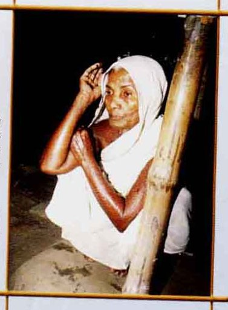
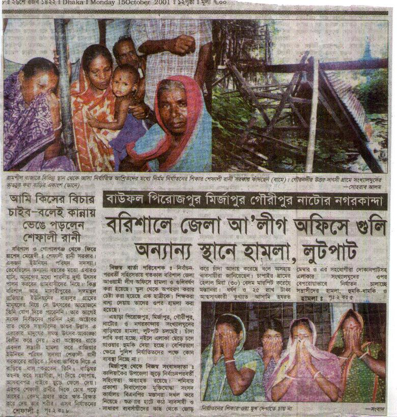

<html>

<head>
<meta http-equiv="Content-Type" content="text/html; charset=windows-1252">
<meta name="GENERATOR" content="Microsoft FrontPage 4.0">
<meta name="ProgId" content="FrontPage.Editor.Document">
<title>Ethnic Cleansing In Bangladesh- Rahul Gupta</title>
<META NAME="description" CONTENT=" We condemn the verdict on Taslima Nasrin meted out by the court of Gopalganj, Bangladesh.">
<META NAME="keywords" CONTENT="Taslima Nasrin, Nasreen, Gopalganj, verdict, one year prison, blasphemy, Bangladesh, Islamisation, Mukto-mona">

</head>

 

 <body background="../mukto_thinker_wm1.jpg" bgproperties="fixed">

<blockquote>
  <p class="MsoBodyText" align="center"><font color="#000080"><b style="mso-bidi-font-weight: normal"><font size="5">&nbsp;</font></b></font></p>
  <div align="center">
    <center>
                            <TABLE ID="NavigationBar2" BORDER=0 CELLSPACING=1 WIDTH=606 height="1">
                                <TR VALIGN=TOP ALIGN=LEFT>
                                    <TD WIDTH=101 height="1" align="center">
                                    <A HREF="../index.html"><font size="2">
                                    </font></A></TD>
                                    <TD WIDTH=101 height="1" align="center">
                                    <A HREF="../Articles/articles.html"><font size="2">
                                    </font></A></TD>
                                    <TD WIDTH=101 height="1" align="center">
                                    <A HREF="../Recent_Debate/recent_debate.html"><font size="2">
                                    </font></A></TD>
                                    <TD WIDTH=101 height="1" align="center">
                                    <A HREF="../Special_Event_/special_event_.html"><font size="2">
                                    </font></A></TD>
                                    <TD WIDTH=101 height="1" align="center">
                                    <A HREF="../Moderators/moderators.html"><font size="2">
                                    </font></A></TD>
                                    <TD WIDTH=101 HEIGHT=1 align="center">
                                    <A HREF="../Forum/forum.html"><font size="2">
                                    </font></A></TD>
                                </TR>
                                <TR VALIGN=TOP ALIGN=LEFT>
                                    <TD WIDTH=101 align="center" bgcolor="#BFD8D9" height="6">
                                      <p align="left"><font size="2" color="#FFFFFF">&nbsp;<a href="../women/index.html"><b>Women</b></a></font></TD>
                                    <TD WIDTH=202 bgcolor="#BFD8D9" align="center" colspan="2" height="6"><font size="2" color="#FFFFFF">
                                    <a href="index.html"><b>Human
                                      Rights violation</b></a></font></TD>
                                    <TD WIDTH=202 bgcolor="#BFD8D9" align="center" colspan="2" height="6"><font size="2" color="#FFFFFF">
                                    <a href="../personalities/index.html"><b>Great
                                      Personalities&nbsp;</b></a></font></TD>
                                    <TD WIDTH=101 HEIGHT=6 align="center" bgcolor="#BFD8D9">
                                      <p align="left"><font size="2" color="#FFFFFF">&nbsp;<a href="../humour/index.html"><b>Humor</b></a></font></TD>
                                </TR>
                            </TABLE>
    </center>
  </div>
  <div align="center">
    <table cellSpacing="0" cellPadding="0" width="600" border="0">
      <tbody>
        <tr>
          <td colSpan="2" rowSpan="3"></td>
          <td class="k" bgColor="#6fb1d9"></td>
          <td align="right" colSpan="2" rowSpan="3"></td>
        </tr>
        <tr>
          <td class="h" bgColor="#eef5fa" height="22">
            <p align="center">&nbsp;</p>
          </td>
        </tr>
        <tr>
          <td class="k" width="1" bgColor="#6fb1d9"></td>
        </tr>
        <tr>
          <td class="k" width="1" bgColor="#6fb1d9"></td>
          <td width="18" bgColor="white"></td>
          <td bgColor="#FFFFFF">
  <table border="1" width="48%">
  </table>
  <p class="MsoNormal" style="LINE-HEIGHT: 12pt; tab-stops: 0cm 36.0pt 72.0pt 108.0pt 144.0pt 180.0pt 216.0pt; mso-layout-grid-align: none" align="center"><b><span lang="EN-US" style="FONT-FAMILY: Helvetica; mso-bidi-font-family: 'Times New Roman'"><font color="#000080" size="4">Ethnic
  Cleansing In Bangladesh</font></span></b></p>
  <p class="MsoNormal" style="LINE-HEIGHT: 12pt; tab-stops: 0cm 36.0pt 72.0pt 108.0pt 144.0pt 180.0pt 216.0pt; mso-layout-grid-align: none" align="center"><b><font color="#800000" size="4"><span lang="EN-US" style="FONT-FAMILY: Helvetica; mso-bidi-font-family: Times New Roman"><span style="FONT-FAMILY: Helvetica; mso-bidi-font-family: Times New Roman">By
  Rahul Gupta</span><span style="FONT-FAMILY: Helvetica; mso-bidi-font-family: 'Times New Roman'"><o:p>
  </o:p>
  </span></span></font></b></p>
  <p class="MsoNormal" style="LINE-HEIGHT: 12pt; TEXT-ALIGN: justify; tab-stops: 0cm 36.0pt 72.0pt 108.0pt 144.0pt 180.0pt 216.0pt; mso-layout-grid-align: none"><b><u><span lang="EN-US" style="FONT-FAMILY: Helvetica; mso-bidi-font-family: 'Times New Roman'"><font size="3"><span style="BACKGROUND-COLOR: #99ff99">Vanishing
  Minority Population</span><o:p>
  </o:p>
  </font></span></u></b></p>
  <p class="MsoNormal" style="LINE-HEIGHT: 12pt; TEXT-ALIGN: justify; tab-stops: 0cm 36.0pt 72.0pt 108.0pt 144.0pt 180.0pt 216.0pt; mso-layout-grid-align: none"><span lang="EN-US" style="COLOR: black; FONT-FAMILY: Helvetica; mso-bidi-font-family: 'Times New Roman'"><font size="3">&nbsp;Hindus
  comprised nearly 30% of the total population in Bangladesh in 1947. After the
  exodus of minorities following the partition of India in 1947, the hindu
  population went down to about 22% by 1951. Due to unabated persecution,
  intimidation, and forcible conversion to Islam, the Hindu-Minority population
  kept on dwindling and now stands at a meager 10.5% of the total population in
  Bangladesh (1991 census).&nbsp;<o:p>
  </o:p>
  </font></span></p>
  <p class="MsoNormal" style="LINE-HEIGHT: 12pt; TEXT-ALIGN: justify; tab-stops: 0cm 36.0pt 72.0pt 108.0pt 144.0pt 180.0pt 216.0pt; mso-layout-grid-align: none"><span lang="EN-US" style="COLOR: black; FONT-FAMILY: Helvetica; mso-bidi-font-family: 'Times New Roman'"><font size="3">Interesting
  to note that minority Muslim population in adjoining West Bengal (India)
  showed a positive growth rate and according to 1991 Census, stood at nearly
  24% of the total population from only about 12% in 1947. <o:p>
  </o:p>
  </font></span></p>
  <p class="MsoNormal" style="LINE-HEIGHT: 12pt; tab-stops: 0cm 36.0pt 72.0pt 108.0pt 144.0pt 180.0pt 216.0pt; mso-layout-grid-align: none"><span lang="EN-US" style="COLOR: black; FONT-FAMILY: Helvetica; mso-bidi-font-family: 'Times New Roman'"><font size="3">&nbsp;<o:p>
  </o:p>
  </font></span></p>
  <p class="MsoNormal" style="LINE-HEIGHT: 12pt; TEXT-ALIGN: justify; tab-stops: 0cm 36.0pt 72.0pt 108.0pt 144.0pt 180.0pt 216.0pt; mso-layout-grid-align: none"><b><u><font size="3"><span lang="EN-US" style="FONT-FAMILY: Helvetica; BACKGROUND-COLOR: #99ff99; mso-bidi-font-family: Times New Roman">India
  and West Bengal Census Data</span><span lang="EN-US" style="COLOR: black; FONT-FAMILY: Helvetica; mso-bidi-font-family: 'Times New Roman'"><o:p>
  </o:p>
  </span></font></u></b></p>
  <p class="MsoNormal" style="LINE-HEIGHT: 12pt; tab-stops: 0cm 36.0pt 72.0pt 108.0pt 144.0pt 180.0pt 216.0pt; mso-layout-grid-align: none"><span lang="EN-US" style="COLOR: black; FONT-FAMILY: Helvetica; mso-bidi-font-family: 'Times New Roman'"><font size="3">&nbsp;Source:
  Census of India 1991 (<a href="http://www.censusindia.net/">http://www.censusindia.net/</a>),
  Data Source : 1991 Census of India&nbsp;<o:p>
  </o:p>
  </font></span></p>
  <h1><span lang="EN-US"><font size="3">Table 29: Population of India since 1901
  Census</font></span></h1>
  <p class="MsoNormal" style="LINE-HEIGHT: 12pt; tab-stops: 0cm 36.0pt 72.0pt 108.0pt 144.0pt 180.0pt 216.0pt; mso-layout-grid-align: none"><span lang="EN-US" style="COLOR: black; FONT-FAMILY: Helvetica; mso-bidi-font-family: 'Times New Roman'"><font size="3">&nbsp;</font></span><u><span lang="EN-US" style="COLOR: black; FONT-FAMILY: Helvetica; mso-bidi-font-family: 'Times New Roman'"><font size="3">Table
  24: Three Main Religions in every state, (India, 1991)<o:p>
  </o:p>
  </font></span></u></p>
  <p class="MsoNormal" style="LINE-HEIGHT: 12pt; tab-stops: 0cm 36.0pt 72.0pt 108.0pt 144.0pt 180.0pt 216.0pt; mso-layout-grid-align: none"><span lang="EN-US" style="COLOR: black; FONT-FAMILY: Helvetica; mso-bidi-font-family: 'Times New Roman'"><font size="3">&nbsp;<o:p>
  </o:p>
  </font></span></p>
  <p class="MsoNormal" style="LINE-HEIGHT: 12pt; tab-stops: 0cm 36.0pt 72.0pt 108.0pt 144.0pt 180.0pt 216.0pt; mso-layout-grid-align: none"><span lang="EN-US" style="COLOR: black; FONT-FAMILY: Helvetica; mso-bidi-font-family: 'Times New Roman'"><font size="3">Hindus<span style="mso-tab-count: 2">&nbsp;&nbsp;&nbsp;&nbsp;&nbsp;&nbsp;&nbsp;&nbsp;&nbsp;&nbsp;&nbsp;&nbsp;&nbsp;
  </span>687,646,721<span style="mso-tab-count: 1">&nbsp;&nbsp;&nbsp;&nbsp;&nbsp;
  </span>82.00 %<o:p>
  </o:p>
  </font></span></p>
  <p class="MsoNormal" style="LINE-HEIGHT: 12pt; tab-stops: 0cm 36.0pt 72.0pt 108.0pt 144.0pt 180.0pt 216.0pt; mso-layout-grid-align: none"><span lang="EN-US" style="COLOR: black; FONT-FAMILY: Helvetica; mso-bidi-font-family: 'Times New Roman'"><font size="3">Muslims<span style="mso-tab-count: 1">&nbsp;&nbsp;&nbsp;&nbsp;&nbsp;&nbsp;&nbsp;&nbsp;&nbsp;&nbsp;&nbsp;
  </span>101,596,057<span style="mso-tab-count: 1">&nbsp;&nbsp;&nbsp;&nbsp;&nbsp;
  </span>12.12<span style="mso-spacerun: yes">&nbsp; </span>%<o:p>
  </o:p>
  </font></span></p>
  <p class="MsoNormal" style="LINE-HEIGHT: 12pt; tab-stops: 0cm 36.0pt 72.0pt 108.0pt 144.0pt 180.0pt 216.0pt; mso-layout-grid-align: none"><span lang="EN-US" style="COLOR: black; FONT-FAMILY: Helvetica; mso-bidi-font-family: 'Times New Roman'"><font size="3">Christians<span style="mso-tab-count: 1">&nbsp;&nbsp;&nbsp;&nbsp;&nbsp;&nbsp;&nbsp;&nbsp;&nbsp;
  </span>19,640,284<span style="mso-tab-count: 1">&nbsp;&nbsp;&nbsp;&nbsp;&nbsp;&nbsp;&nbsp;
  </span>2.34 %<o:p>
  </o:p>
  </font></span></p>
  <p class="MsoNormal" style="LINE-HEIGHT: 12pt; tab-stops: 0cm 36.0pt 72.0pt 108.0pt 144.0pt 180.0pt 216.0pt; mso-layout-grid-align: none"><span lang="EN-US" style="COLOR: black; FONT-FAMILY: Helvetica; mso-bidi-font-family: 'Times New Roman'"><font size="3"><span style="mso-tab-count: 2">&nbsp;&nbsp;&nbsp;&nbsp;&nbsp;&nbsp;&nbsp;&nbsp;&nbsp;&nbsp;&nbsp;&nbsp;&nbsp;&nbsp;&nbsp;&nbsp;&nbsp;&nbsp;&nbsp;&nbsp;&nbsp;&nbsp;&nbsp;
  </span>846,302,688<span style="mso-tab-count: 1">&nbsp;&nbsp;&nbsp;&nbsp;&nbsp;
  </span>(Total)<o:p>
  </o:p>
  </font></span></p>
  <p class="MsoNormal" style="LINE-HEIGHT: 12pt; tab-stops: 0cm 36.0pt 72.0pt 108.0pt 144.0pt 180.0pt 216.0pt; mso-layout-grid-align: none"><span lang="EN-US" style="COLOR: black; FONT-FAMILY: Helvetica; mso-bidi-font-family: 'Times New Roman'"><font size="3">&nbsp;</font></span><u><span lang="EN-US" style="COLOR: black; FONT-FAMILY: Helvetica; mso-bidi-font-family: 'Times New Roman'"><font size="3">West
  Bengal (1991)<o:p>
  </o:p>
  </font></span></u></p>
  <p class="MsoNormal" style="LINE-HEIGHT: 12pt; tab-stops: 0cm 36.0pt 72.0pt 108.0pt 144.0pt 180.0pt 216.0pt; mso-layout-grid-align: none"><span lang="EN-US" style="COLOR: black; FONT-FAMILY: Helvetica; mso-bidi-font-family: 'Times New Roman'"><font size="3">&nbsp;<o:p>
  </o:p>
  </font></span></p>
  <p class="MsoNormal" style="LINE-HEIGHT: 12pt; tab-stops: 0cm 36.0pt 72.0pt 108.0pt 144.0pt 180.0pt 216.0pt; mso-layout-grid-align: none"><span lang="EN-US" style="COLOR: black; FONT-FAMILY: Helvetica; mso-bidi-font-family: 'Times New Roman'"><font size="3">Hindus<span style="mso-tab-count: 2">&nbsp;&nbsp;&nbsp;&nbsp;&nbsp;&nbsp;&nbsp;&nbsp;&nbsp;&nbsp;&nbsp;&nbsp;&nbsp;
  </span>50,866,624<span style="mso-tab-count: 1">&nbsp;&nbsp;&nbsp;&nbsp;&nbsp;&nbsp;&nbsp;
  </span>74.7 % (1961 : 78.8%, decreased 4.1%)<o:p>
  </o:p>
  </font></span></p>
  <p class="MsoNormal" style="LINE-HEIGHT: 12pt; tab-stops: 0cm 36.0pt 72.0pt 108.0pt 144.0pt 180.0pt 216.0pt; mso-layout-grid-align: none"><span lang="EN-US" style="COLOR: black; FONT-FAMILY: Helvetica; mso-bidi-font-family: 'Times New Roman'"><font size="3">Muslims<span style="mso-tab-count: 1">&nbsp;&nbsp;&nbsp;&nbsp;&nbsp;&nbsp;&nbsp;&nbsp;&nbsp;&nbsp;&nbsp;
  </span>16,075,836<span style="mso-tab-count: 1">&nbsp;&nbsp;&nbsp;&nbsp;&nbsp;&nbsp;&nbsp;
  </span>23.6 % (1961 : 20%, increased 3.6%)<o:p>
  </o:p>
  </font></span></p>
  <p class="MsoNormal" style="LINE-HEIGHT: 12pt; tab-stops: 0cm 36.0pt 72.0pt 108.0pt 144.0pt 180.0pt 216.0pt; mso-layout-grid-align: none"><span lang="EN-US" style="COLOR: black; FONT-FAMILY: Helvetica; mso-bidi-font-family: 'Times New Roman'"><font size="3">Christians<span style="mso-tab-count: 1">&nbsp;&nbsp;&nbsp;&nbsp;&nbsp;&nbsp;&nbsp;&nbsp;&nbsp;
  </span>383,477<span style="mso-tab-count: 1"> </span>0.6 %<span style="mso-spacerun: yes">&nbsp;&nbsp;</span><span style="mso-tab-count: 1">&nbsp;
  </span>(1961 : 0.5%, increased 0.1%)<o:p>
  </o:p>
  </font></span></p>
  <p class="MsoNormal" style="LINE-HEIGHT: 12pt; tab-stops: 0cm 36.0pt 72.0pt 108.0pt 144.0pt 180.0pt 216.0pt; mso-layout-grid-align: none"><span lang="EN-US" style="COLOR: black; FONT-FAMILY: Helvetica; mso-bidi-font-family: 'Times New Roman'"><font size="3">&nbsp;<o:p>
  </o:p>
  </font></span></p>
  <p class="MsoNormal" style="LINE-HEIGHT: 12pt; tab-stops: 0cm 36.0pt 72.0pt 108.0pt 144.0pt 180.0pt 216.0pt; mso-layout-grid-align: none"><u><span lang="EN-US" style="COLOR: black; FONT-FAMILY: Helvetica; mso-bidi-font-family: 'Times New Roman'"><font size="3">West
  Bengal (1961-1991)<o:p>
  </o:p>
  </font></span></u></p>
  <p class="MsoNormal" style="LINE-HEIGHT: 12pt; tab-stops: 0cm 36.0pt 72.0pt 108.0pt 144.0pt 180.0pt 216.0pt; mso-layout-grid-align: none"><span lang="EN-US" style="COLOR: black; FONT-FAMILY: Helvetica; mso-bidi-font-family: 'Times New Roman'"><font size="3">&nbsp;<o:p>
  </o:p>
  </font></span></p>
  <p class="MsoNormal" style="LINE-HEIGHT: 12pt; tab-stops: 0cm 36.0pt 72.0pt 108.0pt 144.0pt 180.0pt 216.0pt; mso-layout-grid-align: none"><span lang="EN-US" style="COLOR: black; FONT-FAMILY: Helvetica; mso-bidi-font-family: 'Times New Roman'"><font size="3">Year<span style="mso-tab-count: 1">&nbsp;&nbsp;&nbsp;&nbsp;
  </span>Total<span style="mso-tab-count: 1">&nbsp;&nbsp;&nbsp;&nbsp; </span>Hindu<span style="mso-tab-count: 1">&nbsp;&nbsp;&nbsp;
  </span>Muslim<span style="mso-tab-count: 1">&nbsp; </span>Chrsn<span style="mso-tab-count: 1">&nbsp;&nbsp;&nbsp;
  </span>Others<o:p>
  </o:p>
  </font></span></p>
  <p class="MsoNormal" style="LINE-HEIGHT: 12pt; tab-stops: 0cm 36.0pt 72.0pt 108.0pt 144.0pt 180.0pt 216.0pt; mso-layout-grid-align: none"><span lang="EN-US" style="COLOR: black; FONT-FAMILY: Helvetica; mso-bidi-font-family: 'Times New Roman'"><font size="3">&nbsp;<o:p>
  </o:p>
  </font></span></p>
  <p class="MsoNormal" style="LINE-HEIGHT: 12pt; tab-stops: 0cm 36.0pt 72.0pt 108.0pt 144.0pt 180.0pt 216.0pt; mso-layout-grid-align: none"><span lang="EN-US" style="COLOR: black; FONT-FAMILY: Helvetica; mso-bidi-font-family: 'Times New Roman'"><font size="3">1961<span style="mso-tab-count: 1">&nbsp;&nbsp;&nbsp;&nbsp;
  </span>34.92<span style="mso-tab-count: 1">&nbsp;&nbsp;&nbsp; </span>78.8<span style="mso-tab-count: 1">&nbsp;&nbsp;&nbsp;&nbsp;&nbsp;
  </span>20.0<span style="mso-tab-count: 1">&nbsp;&nbsp;&nbsp;&nbsp;&nbsp; </span>0.5<span style="mso-tab-count: 1">&nbsp;&nbsp;&nbsp;&nbsp;&nbsp;&nbsp;&nbsp;
  </span>0.1<o:p>
  </o:p>
  </font></span></p>
  <p class="MsoNormal" style="LINE-HEIGHT: 12pt; tab-stops: 0cm 36.0pt 72.0pt 108.0pt 144.0pt 180.0pt 216.0pt; mso-layout-grid-align: none"><span lang="EN-US" style="COLOR: black; FONT-FAMILY: Helvetica; mso-bidi-font-family: 'Times New Roman'"><font size="3">1991<span style="mso-tab-count: 1">&nbsp;&nbsp;&nbsp;&nbsp;
  </span>68.07<span style="mso-tab-count: 1">&nbsp;&nbsp;&nbsp; </span>74.7<span style="mso-tab-count: 1">&nbsp;&nbsp;&nbsp;&nbsp;&nbsp;
  </span>23.6<span style="mso-tab-count: 1">&nbsp;&nbsp;&nbsp;&nbsp;&nbsp; </span>0.5<span style="mso-tab-count: 1">&nbsp;&nbsp;&nbsp;&nbsp;&nbsp;&nbsp;&nbsp;
  </span>0.6<o:p>
  </o:p>
  </font></span></p>
  <p class="MsoNormal" style="LINE-HEIGHT: 12pt; tab-stops: 0cm 36.0pt 72.0pt 108.0pt 144.0pt 180.0pt 216.0pt; mso-layout-grid-align: none"><span lang="EN-US" style="COLOR: black; FONT-FAMILY: Helvetica; mso-bidi-font-family: 'Times New Roman'"><font size="3">&nbsp;<o:p>
  </o:p>
  </font></span></p>
  <h1><b><span lang="EN-US"><font size="3"><span style="BACKGROUND-COLOR: #99ff99">Bangladesh</span><o:p>
  </o:p>
  </font></span></b></h1>
  <p class="MsoNormal" style="LINE-HEIGHT: 12pt; tab-stops: 0cm 36.0pt 72.0pt 108.0pt 144.0pt 180.0pt 216.0pt; mso-layout-grid-align: none"><span lang="EN-US" style="COLOR: black; FONT-FAMILY: Helvetica; mso-bidi-font-family: 'Times New Roman'"><font size="3">&nbsp;In
  Bangladesh, hindu population was 28% in 1941; 22% in 1951, 18.5% in 1961;
  13.5% in 1974; <o:p>
  </o:p>
  </font></span></p>
  <p class="MsoNormal" style="LINE-HEIGHT: 12pt; tab-stops: 0cm 36.0pt 72.0pt 108.0pt 144.0pt 180.0pt 216.0pt; mso-layout-grid-align: none"><span lang="EN-US" style="COLOR: black; FONT-FAMILY: Helvetica; mso-bidi-font-family: 'Times New Roman'"><font size="3">12.2%
  in 1981 and 10.5% in 1991. Hindu population decreased by 8% from 1961 to 1991
  (Ref 1, 2).<o:p>
  </o:p>
  </font></span></p>
  <p class="MsoNormal" style="LINE-HEIGHT: 12pt; tab-stops: 0cm 36.0pt 72.0pt 108.0pt 144.0pt 180.0pt 216.0pt; mso-layout-grid-align: none"><span lang="EN-US" style="COLOR: black; FONT-FAMILY: Helvetica; mso-bidi-font-family: 'Times New Roman'"><font size="3">&nbsp;</font></span><span lang="EN-US"><font size="3">The
  vanishing minority population is understood from researching the census
  documents published the government. Fifty years ago in 1941, 28.3 per cent of
  the total population was minorities. The population of Hindu was 11.88
  millions, while 588 thousand was other religious and ethnic minorities
  (Buddhist, Christian and animist). Evaluation of government statistics of 50
  years, from 1941 to 1991, indicates a large drop in the figure for minorities.
  A comparative picture shows that the number of the Muslim majority increased
  219.5 per cent while the Hindu community increased by 4.5 per cent. (Ref 3).</font></span></p>
  <p class="MsoNormal" style="LINE-HEIGHT: 12pt; TEXT-ALIGN: justify; tab-stops: 0cm 36.0pt 72.0pt 108.0pt 144.0pt 180.0pt 216.0pt; mso-layout-grid-align: none"><span lang="EN-US" style="COLOR: black; FONT-FAMILY: Helvetica; mso-bidi-font-family: 'Times New Roman'"><font size="3">&nbsp;If
  normal increase rate prevailed, the number of the Hindu community in this
  country would have been 32.5 million, but the Hindu population in Bangladesh
  stood at 12.5 million in 1991 Census (State of Human Rights, 1994). Therefore
  the missing population is 20 million. (Ref 3).<o:p>
  </o:p>
  </font></span></p>
  <p class="MsoNormal" style="LINE-HEIGHT: 12pt; tab-stops: 0cm 36.0pt 72.0pt 108.0pt 144.0pt 180.0pt 216.0pt; mso-layout-grid-align: none"><span lang="EN-US" style="COLOR: black; FONT-FAMILY: Helvetica; mso-bidi-font-family: 'Times New Roman'"><font size="3">&nbsp;<o:p>
  </o:p>
  </font></span></p>
  <p class="MsoNormal" style="LINE-HEIGHT: 12pt; TEXT-ALIGN: justify; tab-stops: 0cm 36.0pt 72.0pt 108.0pt 144.0pt 180.0pt 216.0pt; mso-layout-grid-align: none"><span lang="EN-US"><font size="3"><b><span lang="EN-US" style="FONT-FAMILY: Helvetica; BACKGROUND-COLOR: #99ff99; mso-bidi-font-family: Times New Roman"><u>Ethnic
  Cleansing In Bangladesh</u></span></b></font></span></p>
  <p class="MsoNormal" style="LINE-HEIGHT: 12pt; tab-stops: 0cm 36.0pt 72.0pt 108.0pt 144.0pt 180.0pt 216.0pt; mso-layout-grid-align: none"><span lang="EN-US" style="COLOR: black; FONT-FAMILY: Helvetica; mso-bidi-font-family: 'Times New Roman'"><font size="3">Ethnic
  cleansing of minorities in Bangladesh<span style="mso-spacerun: yes">&nbsp; </span>(then
  East Pakistan) started in 1947. Over half-a-century has passed with no end is
  in sight. Minorities in Bangladesh,<span style="mso-spacerun: yes">&nbsp; </span>including
  women and children were subjected to extreme brutality and torture following
  the last National Election in Bangladesh held in October 2001, forcing many
  families to migrate out of their<span style="mso-spacerun: yes">&nbsp; </span>&quot;Homeland
  of generations&quot; for physical safety.&nbsp;</font></span></p>
  <p class="MsoNormal" style="LINE-HEIGHT: 12pt; tab-stops: 0cm 36.0pt 72.0pt 108.0pt 144.0pt 180.0pt 216.0pt; mso-layout-grid-align: none" align="center"></p>
  <blockquote>
    <blockquote>
      <p class="MsoNormal" style="LINE-HEIGHT: 12pt; tab-stops: 0cm 36.0pt 72.0pt 108.0pt 144.0pt 180.0pt 216.0pt; mso-layout-grid-align: none"><b>Fig:</b>
      <i>Kamala Debi of Lord Hardinge under district Vola lost every thing due
      to barberious attack of communalist hooligans on Oct 10, 2001</i></p>
    </blockquote>
  </blockquote>
  <p class="MsoNormal" style="LINE-HEIGHT: 12pt; tab-stops: 0cm 36.0pt 72.0pt 108.0pt 144.0pt 180.0pt 216.0pt; mso-layout-grid-align: none">&nbsp;</p>
  <p class="MsoNormal" style="LINE-HEIGHT: 12pt; tab-stops: 0cm 36.0pt 72.0pt 108.0pt 144.0pt 180.0pt 216.0pt; mso-layout-grid-align: none"><span lang="EN-US" style="COLOR: black; FONT-FAMILY: Helvetica; mso-bidi-font-family: 'Times New Roman'"><font size="3">In
  the recent past, there have been several cases of brutal killings of prominent
  members of minority communities in the strategic Chittagong and its Hill
  Tracts, by armed gang of Islamic fanatics. Significantly, these tragic
  incidents were perpetrated in the wake of Santu Larma - Khaleda Zia high-level
  talks at Dhaka on April 20, for establishing permanent peace in the said
  region. That very day in Rangamati (CHT), an armed gang of Bnp-Jei backed
  ‘United People’s Democratic Front’ (Updf) attacked pro-Larma Chakma
  tribals resulting in the death of four Chakma Buddhists. Next day (April 21),
  at Vill. Hingla in Rouzan locality of Chittagong, Gyanjyoti Borooah (55 yrs),
  a locally popular Buddhist Monk, running an Orphanage / Monastery was brutally
  killed. Thereafter on April 28/29, another Chakma Buddhist named Gyandarshi
  Chakma was shot dead at village Babupara in Mahalchhari (Cht). One of his
  companion sustained bullet wounds. The same night,<span style="mso-spacerun: yes">&nbsp;
  </span>Madan Gopal Goswami, a Hindu Priest of<span style="mso-spacerun: yes">&nbsp;
  </span>was gunned down in Gachhabil area of Manikchhari (Cht). These cases of
  utmost brutality generated strong resentment among local Chakmas and Hindus.</font></span></p>
  <font face="Verdana Ref">
  <p align="center"><font face="Comic Sans MS"><i><font size="2" color="#000080">Men
  never do evil so completely and cheerfully as when they do it from religious
  conviction.&quot; -Pascal</font></i></font></p>
  <p align="center"></p>
  <blockquote>
    <blockquote>
      <p align="left"><b>Fig:</b> <i>A Hindu being beaten by Muslims in a mosque
      in Bangladesh.&nbsp; He was captured outside the mosque while going
      home.&nbsp; After Friday prayers were over, the Muslims came out and
      grabbed the first Hindu they could.&nbsp; Mr. Vimal Patak a Bangladeshi
      born Hindu was beaten to death with sticks as the Muslim mullas (priests)
      chanted &quot;kill the Kafir!&quot; (non-muslim).&nbsp;With folded hands
      he begged for his life and died&nbsp; a brutal death.&nbsp;</i></p>
    </blockquote>
  </blockquote>
  </font>
  <p class="MsoNormal" style="LINE-HEIGHT: 12pt; tab-stops: 0cm 36.0pt 72.0pt 108.0pt 144.0pt 180.0pt 216.0pt; mso-layout-grid-align: none"><span lang="EN-US" style="COLOR: black; FONT-FAMILY: Helvetica; mso-bidi-font-family: 'Times New Roman'"><font size="3"><o:p>
  </o:p>
  </font></span></p>
  <p class="MsoNormal" style="LINE-HEIGHT: 12pt; tab-stops: 0cm 36.0pt 72.0pt 108.0pt 144.0pt 180.0pt 216.0pt; mso-layout-grid-align: none">&nbsp;</p>
  <p class="MsoNormal" style="LINE-HEIGHT: 12pt; TEXT-ALIGN: justify; tab-stops: 0cm 36.0pt 72.0pt 108.0pt 144.0pt 180.0pt 216.0pt; mso-layout-grid-align: none"><font size="3"><b><span lang="EN-US"><u><span style="FONT-FAMILY: Helvetica; BACKGROUND-COLOR: #99ff99; mso-bidi-font-family: Times New Roman">Some
  &quot;recent&quot; incidents (2002)</span></u></span><span lang="EN-US" style="COLOR: black; FONT-FAMILY: Helvetica; mso-bidi-font-family: 'Times New Roman'"><u><o:p>
  </o:p>
  </u></span></b></font></p>
  <p class="MsoNormal" style="LINE-HEIGHT: 12pt; TEXT-ALIGN: justify; tab-stops: 0cm 36.0pt 72.0pt 108.0pt 144.0pt 180.0pt 216.0pt; mso-layout-grid-align: none"><span lang="EN-US" style="COLOR: black; FONT-FAMILY: Helvetica; mso-bidi-font-family: 'Times New Roman'"><font size="3">&nbsp;(
  1 )<span style="mso-spacerun: yes">&nbsp;&nbsp;&nbsp; </span>20th April 2002,
  at Moulavibazar district of Bangladesh, in Laxmipur village under Kulaur
  Police station several armed Muslim fundamentalists attacked the houses of
  Dulal Debnath and Jitendra Debnath, both members of the Hindu minority
  community. The houses were set ablaze. The group of miscreants led by Iuyas
  Mian of Balichiri village forcefully captured their lands. A case has been
  filed against them at the Kulaur police station. <o:p>
  </o:p>
  </font></span></p>
  <p class="MsoNormal" style="LINE-HEIGHT: 12pt; TEXT-ALIGN: justify; tab-stops: 0cm 36.0pt 72.0pt 108.0pt 144.0pt 180.0pt 216.0pt; mso-layout-grid-align: none"><span lang="EN-US" style="COLOR: black; FONT-FAMILY: Helvetica; mso-bidi-font-family: 'Times New Roman'"><font size="3">&nbsp;(
  2 )<span style="mso-spacerun: yes">&nbsp;&nbsp;&nbsp; </span>8th May, 2002, N.
  M. Jahangir Alam-A well known journalist of the newspaper Sambad which is
  published from Dhaka, was beaten up by Muslim fundamentalists. Because he was
  accused of publishing several news, reporting the poor conditions of the Hindu
  minority of Bangladesh. He filed a case at the near by Police Station but the
  police did not show the any interest in arresting the miscreants&nbsp;</font></span></p>
  <p class="MsoNormal" style="LINE-HEIGHT: 12pt; TEXT-ALIGN: justify; tab-stops: 0cm 36.0pt 72.0pt 108.0pt 144.0pt 180.0pt 216.0pt; mso-layout-grid-align: none">&nbsp;</p>
  <p class="MsoNormal" style="line-height: 12pt; tab-stops: 0cm 36.0pt 72.0pt 108.0pt 144.0pt 180.0pt 216.0pt; mso-layout-grid-align: none" align="center"></p>
  <blockquote>
    <blockquote>
      <p class="MsoNormal" style="line-height: 12pt; tab-stops: 0cm 36.0pt 72.0pt 108.0pt 144.0pt 180.0pt 216.0pt; mso-layout-grid-align: none" align="center"><b>Fig:</b>
      <i>Bangladeshi newspapers continuously featured on Minority Oppression
      after BD election&nbsp;</i></p>
    </blockquote>
  </blockquote>
  <p class="MsoNormal" style="LINE-HEIGHT: 12pt; TEXT-ALIGN: justify; tab-stops: 0cm 36.0pt 72.0pt 108.0pt 144.0pt 180.0pt 216.0pt; mso-layout-grid-align: none"><span lang="EN-US" style="COLOR: black; FONT-FAMILY: Helvetica; mso-bidi-font-family: 'Times New Roman'"><font size="3"><o:p>
  </o:p>
  </font></span></p>
  <p class="MsoNormal" style="LINE-HEIGHT: 12pt; TEXT-ALIGN: justify; tab-stops: 0cm 36.0pt 72.0pt 108.0pt 144.0pt 180.0pt 216.0pt; mso-layout-grid-align: none"><span lang="EN-US" style="COLOR: black; FONT-FAMILY: Helvetica; mso-bidi-font-family: 'Times New Roman'"><font size="3">&nbsp;(
  3 )<span style="mso-spacerun: yes">&nbsp;&nbsp;&nbsp; </span>5th May, 2002-in
  the morning, At the Dolu Bridge area situated in the Shattkaniya sub-district
  of South Chattagram, a group of Muslim fundamentalists kidnapped Rupam Mullick,
  a Hindu resident and damaged his arms and legs. <o:p>
  </o:p>
  </font></span></p>
  <p class="MsoNormal" style="LINE-HEIGHT: 12pt; TEXT-ALIGN: justify; tab-stops: 0cm 36.0pt 72.0pt 108.0pt 144.0pt 180.0pt 216.0pt; mso-layout-grid-align: none"><span lang="EN-US" style="COLOR: black; FONT-FAMILY: Helvetica; mso-bidi-font-family: 'Times New Roman'"><font size="3">&nbsp;(
  4 )<span style="mso-spacerun: yes">&nbsp;&nbsp;&nbsp; </span>23rd May, 2002,
  near Sadhurpara situated at the Chandgaon police station of Chattagram, the
  local Muslim fundamentalists forcefully captured the lands owned by a Hindu
  widow Charubala Nath (80). <o:p>
  </o:p>
  </font></span></p>
  <p class="MsoNormal" style="LINE-HEIGHT: 12pt; TEXT-ALIGN: justify; tab-stops: 0cm 36.0pt 72.0pt 108.0pt 144.0pt 180.0pt 216.0pt; mso-layout-grid-align: none"><span lang="EN-US" style="COLOR: black; FONT-FAMILY: Helvetica; mso-bidi-font-family: 'Times New Roman'"><font size="3">&nbsp;(
  5 )<span style="mso-spacerun: yes">&nbsp;&nbsp;&nbsp; </span>8th May, 2002,-in
  Narikelbaria village of Bakharpara sub-district situated at Jessore, a local
  Muslim extreamist, Saiful along with Kabir and other fundamentalists demanded,
  more than 1 lakhs takas (U.S. $2,000) as Jizya tax (tax imposed by non-Muslims
  on Muslims) from a business Subodh Saha. But Subodh refused to pay the tax. As
  a result the fanatics took a glass bottle fill with hot water and vehemently
  beat Subodh with it. He was badly injured. His two legs were damaged. Another
  person called Bablu Saha, who came to protect Subodh was also beaten up. <o:p>
  </o:p>
  </font></span></p>
  <p class="MsoNormal" style="LINE-HEIGHT: 12pt; TEXT-ALIGN: justify; tab-stops: 0cm 36.0pt 72.0pt 108.0pt 144.0pt 180.0pt 216.0pt; mso-layout-grid-align: none"><span lang="EN-US" style="COLOR: black; FONT-FAMILY: Helvetica; mso-bidi-font-family: 'Times New Roman'"><font size="3">&nbsp;(
  6 )<span style="mso-spacerun: yes">&nbsp;&nbsp;&nbsp; </span>10th May, 2002,
  at night, a Hindu journalist named Manik Mazumdar's office was destroyed by a
  group of right wing Muslim fundamentalists. Manik Mazumdar is the president of
  reporter's union of Madhukhali sub-district in Faridpur. <o:p>
  </o:p>
  </font></span></p>
  <p class="MsoNormal" style="LINE-HEIGHT: 12pt; TEXT-ALIGN: justify; tab-stops: 0cm 36.0pt 72.0pt 108.0pt 144.0pt 180.0pt 216.0pt; mso-layout-grid-align: none"><span lang="EN-US" style="COLOR: black; FONT-FAMILY: Helvetica; mso-bidi-font-family: 'Times New Roman'"><font size="3">&nbsp;(
  7 )<span style="mso-spacerun: yes">&nbsp;&nbsp;&nbsp; </span>25th April, 2002,
  9 o'clock at morning in Thakurgaon district, Chandramohan Sarkar, headmaster
  of Shapla Adarsha Uchcha Vidyalaya was forcefully resigned from his post
  because of being a Hindu, by Muslim fundamentalists. <o:p>
  </o:p>
  </font></span></p>
  <p class="MsoNormal" style="LINE-HEIGHT: 12pt; TEXT-ALIGN: justify; tab-stops: 0cm 36.0pt 72.0pt 108.0pt 144.0pt 180.0pt 216.0pt; mso-layout-grid-align: none"><span lang="EN-US" style="COLOR: black; FONT-FAMILY: Helvetica; mso-bidi-font-family: 'Times New Roman'"><font size="3">&nbsp;(
  8 )<span style="mso-spacerun: yes">&nbsp;&nbsp;&nbsp; </span>7th May, 2002, at
  the Shathkhira sub-district, in the Sreerampur village a Hindu housewife was
  raped by a reactionary Muslim fanatic named Shafiqul Islam. A case has been
  filed but no adequate action has been taken by the police against the accused.
  &nbsp;<o:p>
  </o:p>
  </font></span></p>
  <p class="MsoNormal" style="LINE-HEIGHT: 12pt; TEXT-ALIGN: justify; tab-stops: 0cm 36.0pt 72.0pt 108.0pt 144.0pt 180.0pt 216.0pt; mso-layout-grid-align: none"><span lang="EN-US" style="COLOR: black; FONT-FAMILY: Helvetica; mso-bidi-font-family: 'Times New Roman'"><font size="3">(
  9 )<span style="mso-spacerun: yes">&nbsp;&nbsp;&nbsp; </span>9th May, 2002, at
  night, a Hindu religious place-''Aditya Asram'' situated in the Khashipur
  village under the Banshkhali police station of Chattagram was demolished by
  some Muslim activists. A group of 30 to 40 muslim fundamentalists along with
  sharp weapons attacked the ''Aditya Asram''. The priest of the temple-Pradipananda
  Purimoharaj was deeply injured by the fundamentalists. The property of the
  ''Ashram'' has been looted &amp; taken away by the attackers. &nbsp;<o:p>
  </o:p>
  </font></span></p>
  <p class="MsoNormal" style="LINE-HEIGHT: 12pt; TEXT-ALIGN: justify; tab-stops: 0cm 36.0pt 72.0pt 108.0pt 144.0pt 180.0pt 216.0pt; mso-layout-grid-align: none"><span lang="EN-US" style="COLOR: black; FONT-FAMILY: Helvetica; mso-bidi-font-family: 'Times New Roman'"><font size="3">(
  10 )<span style="mso-spacerun: yes">&nbsp;&nbsp;&nbsp; </span>4th May 2002, at
  night, near the Biyanibazar of Sulhet district, a Hindu Brahmin girl of the
  Uttabhag village has been kidnapped by a group of Muslim fundamentalists and
  raped mercilessly. 5th May, the villagers rescued her but she was totally
  senseless. &nbsp;<o:p>
  </o:p>
  </font></span></p>
  <p class="MsoNormal" style="LINE-HEIGHT: 12pt; TEXT-ALIGN: justify; tab-stops: 0cm 36.0pt 72.0pt 108.0pt 144.0pt 180.0pt 216.0pt; mso-layout-grid-align: none"><span lang="EN-US" style="COLOR: black; FONT-FAMILY: Helvetica; mso-bidi-font-family: 'Times New Roman'"><font size="3">(
  11 )<span style="mso-spacerun: yes">&nbsp;&nbsp;&nbsp; </span>3rd May, 2002,
  at night, in Kumilya district of Bangladesh Brajendra Bhowmick, a Hindu
  villager of Haludia situated under Mujaffargunge Union was attacked by armed
  right wing Muslim fundamentalists. The houses of Subhash Chandra Bhowmick,
  Nakul Chandra Bhowmick and Bimalendu Bhowmick have been set a blaze. The local
  police station is still indifferent regarding the incident. &nbsp;<o:p>
  </o:p>
  </font></span></p>
  <p class="MsoNormal" style="LINE-HEIGHT: 12pt; TEXT-ALIGN: justify; tab-stops: 0cm 36.0pt 72.0pt 108.0pt 144.0pt 180.0pt 216.0pt; mso-layout-grid-align: none"><span lang="EN-US" style="COLOR: black; FONT-FAMILY: Helvetica; mso-bidi-font-family: 'Times New Roman'"><font size="3">(
  12 )<span style="mso-spacerun: yes">&nbsp;&nbsp;&nbsp; </span>8th May, 2002,
  at night, in the Nator district of Bangladesh, the villagers of Bashantapur at
  Shingra sub-district were attacked by armed Muslim extremists. The houses of
  Niren, Nitai, Atul, Prabhat, Dinesh, Ajit, Krishna, Jitendra, Basudev and
  Sukumar, all Hindus were looted. The families have decided to leave
  Bashantapur for India. &nbsp;<o:p>
  </o:p>
  </font></span></p>
  <p class="MsoNormal" style="LINE-HEIGHT: 12pt; TEXT-ALIGN: justify; tab-stops: 0cm 36.0pt 72.0pt 108.0pt 144.0pt 180.0pt 216.0pt; mso-layout-grid-align: none"><span lang="EN-US" style="COLOR: black; FONT-FAMILY: Helvetica; mso-bidi-font-family: 'Times New Roman'"><font size="3">(
  13 )<span style="mso-spacerun: yes">&nbsp;&nbsp;&nbsp; </span>Recently, near
  the Patuakhali sub-district of Bangladesh, at Khachipara and Kalishuri village
  of Banpual-the Hindu minorities have been forcibly interned at their homes to
  keep them under observation. Shishutosh Dash, Bhabaranjan Das, Debendranath
  Sarkar and Hiron Kumar Sarkar were forced to sign and give away all their
  houses and properties to the Muslim fundamentalists. They only cried in
  silence and left their land to move away to any other place. &nbsp;<o:p>
  </o:p>
  </font></span></p>
  <p class="MsoNormal" style="LINE-HEIGHT: 12pt; TEXT-ALIGN: justify; tab-stops: 0cm 36.0pt 72.0pt 108.0pt 144.0pt 180.0pt 216.0pt; mso-layout-grid-align: none"><span lang="EN-US" style="COLOR: black; FONT-FAMILY: Helvetica; mso-bidi-font-family: 'Times New Roman'"><font size="3">(
  14 )<span style="mso-spacerun: yes">&nbsp;&nbsp;&nbsp; </span>20th April, in
  evening, at Uttapara sub-distict of Shirajgunga a Hindu clothes merchant,
  Nitai Sarkar has been attacked by some muslim exrremsits. Clothes from his
  shop were stolen that valued nearly, 1 lakh (U.S. $ 2,000) takas. Being
  mercilessly beaten he is now under treatment. &nbsp;<o:p>
  </o:p>
  </font></span></p>
  <p class="MsoNormal" style="LINE-HEIGHT: 12pt; TEXT-ALIGN: justify; tab-stops: 0cm 36.0pt 72.0pt 108.0pt 144.0pt 180.0pt 216.0pt; mso-layout-grid-align: none"><span lang="EN-US" style="COLOR: black; FONT-FAMILY: Helvetica; mso-bidi-font-family: 'Times New Roman'"><font size="3">(
  15 )<span style="mso-spacerun: yes">&nbsp;&nbsp;&nbsp; </span>15th April 2002,
  in the Chagal Naiya sub-distict of Pheni district, Khrishna Das (60) and Ujjal
  Das (27) Hindu vilagers of Sattar village has been severely tortured by local
  right wing Muslim fundamentaliss, because they refused to pay the jizya tax
  according to their demands. &nbsp;<o:p>
  </o:p>
  </font></span></p>
  <p class="MsoNormal" style="LINE-HEIGHT: 12pt; TEXT-ALIGN: justify; tab-stops: 0cm 36.0pt 72.0pt 108.0pt 144.0pt 180.0pt 216.0pt; mso-layout-grid-align: none"><span lang="EN-US" style="COLOR: black; FONT-FAMILY: Helvetica; mso-bidi-font-family: 'Times New Roman'"><font size="3">(
  16 )<span style="mso-spacerun: yes">&nbsp;&nbsp; &nbsp;</span>20th May 2002,
  at Bargauna district of Bangladesh, in Bukabania Zabar of Bamma sub-distrcits
  some Hindu owned lands surrounding a temple were captured by the Muslim
  partymen. They belonged to the fundamentalists group of the Bangladesh
  National Party. They have started to build their party office in that area. <o:p>
  </o:p>
  </font></span></p>
  <p class="MsoNormal" style="LINE-HEIGHT: 12pt; TEXT-ALIGN: justify; tab-stops: 0cm 36.0pt 72.0pt 108.0pt 144.0pt 180.0pt 216.0pt; mso-layout-grid-align: none"><span lang="EN-US" style="COLOR: black; FONT-FAMILY: Helvetica; mso-bidi-font-family: 'Times New Roman'"><font size="3">&nbsp;<o:p>
  </o:p>
  </font></span></p>
  <p class="MsoNormal" style="LINE-HEIGHT: 12pt; TEXT-ALIGN: justify; tab-stops: 0cm 36.0pt 72.0pt 108.0pt 144.0pt 180.0pt 216.0pt; mso-layout-grid-align: none"><b><font size="3"><span lang="EN-US" style="FONT-FAMILY: Helvetica; BACKGROUND-COLOR: #99ff99; mso-bidi-font-family: Times New Roman"><u>Forceful
  Conversion of Two<span style="FONT-FAMILY: Helvetica; BACKGROUND-COLOR: #99ff99; mso-bidi-font-family: Times New Roman">&nbsp;
  </span>Minor Hindu Girls to Islam-Attack on Family Members:</u></span><span lang="EN-US" style="COLOR: black; FONT-FAMILY: Helvetica; mso-bidi-font-family: 'Times New Roman'; mso-bidi-font-size: 12.0pt"><o:p>
  </o:p>
  </span></font></b></p>
  <p class="MsoNormal" style="LINE-HEIGHT: 12pt; TEXT-ALIGN: justify; tab-stops: 0cm 36.0pt 72.0pt 108.0pt 144.0pt 180.0pt 216.0pt; mso-layout-grid-align: none"><span lang="EN-US" style="COLOR: black; FONT-FAMILY: Helvetica; mso-bidi-font-family: 'Times New Roman'"><font size="3">Monday,
  August 05,<span style="mso-spacerun: yes">&nbsp; </span>2002&nbsp;<o:p>
  </o:p>
  </font></span></p>
  <p class="MsoNormal" style="LINE-HEIGHT: 12pt; TEXT-ALIGN: justify; mso-layout-grid-align: none"><span lang="EN-US" style="COLOR: black; FONT-FAMILY: Helvetica; mso-bidi-font-family: 'Times New Roman'"><font size="3">Two<span style="mso-spacerun: yes">&nbsp;
  </span>minor Hindu girls, namely Miss Sushma Rani Malo (15 year old), daughter
  of Shri<span style="mso-spacerun: yes">&nbsp; </span>Anil Chandra Malo and
  Miss Putul Rani Malo (15 year old), daughter of<span style="mso-spacerun: yes">&nbsp;
  </span>ShriMonoranjan<span style="mso-spacerun: yes">&nbsp; </span>Malo of
  village Kulpaddy, Police Station and District of Madaripur, were<span style="mso-spacerun: yes">&nbsp;
  </span>kidnapped from their houses one kilometer from Madaripur police
  station. The<span style="mso-spacerun: yes">&nbsp; </span>guardians of the
  victims described in a very heart-rending manner to Advocate<span style="mso-spacerun: yes">&nbsp;
  </span>Rabindra Ghosh, President HRCBM, Dhaka, Bangladesh, that their minor
  daughters<span style="mso-spacerun: yes">&nbsp; </span>were students of Class
  VIII. The minor girls were kidnapped by some Muslims of<span style="mso-spacerun: yes">&nbsp;
  </span>the same village, led by the Imman of Madaripur Sadar Hospital Mosque.
  They were<span style="mso-spacerun: yes">&nbsp; </span>forced to sign an
  affidavit that they are 19 years of age and they wanted to<span style="mso-spacerun: yes">&nbsp;
  </span>convert to Islam at their own will on 25th of July, 2002. In addition,
  they were<span style="mso-spacerun: yes">&nbsp; </span>allured and detained
  and compelled by some Muslims of the same locality,<span style="mso-spacerun: yes">&nbsp;
  </span>particularly the supporters of Jamal-E-Islami Party, to swear an
  affidavit by a<span style="mso-spacerun: yes">&nbsp; </span>Notary Public at
  Madaripur. The victims, Putul Rani Malo and Sushma Rani Malo,<span style="mso-spacerun: yes">&nbsp;
  </span>came back to their parents on 25th July, 2002, in the evening. On
  hearing the<span style="mso-spacerun: yes">&nbsp; </span>news that the two
  girls had gone back to their parents some Jamal-E-Islamic<span style="mso-spacerun: yes">&nbsp;
  </span>supporters numbering about 250/300 surrounded the houses of the
  victim-girls at<span style="mso-spacerun: yes">&nbsp; </span>about 11 P.M. at
  night. The criminals started assaulting Arun Chandra Malo(26),<span style="mso-spacerun: yes">&nbsp;
  </span>brother of victim Sushma Rani Malo. Arun Chandra Malo sustained severe
  injuries<span style="mso-spacerun: yes">&nbsp; </span>on the lower portion of
  the eyes, which were still visible after 8 days. He was<span style="mso-spacerun: yes">&nbsp;
  </span>under the treatment of local doctor. Ultimately those two victim girls
  were<span style="mso-spacerun: yes">&nbsp; </span>again kidnapped by the
  Muslim criminals on 26th July, 2002. The police and law<span style="mso-spacerun: yes">&nbsp;
  </span>enforcement authorities did neither provide any protection to the girls
  and<span style="mso-spacerun: yes">&nbsp; </span>their families nor arrested
  the criminals. Not only that the miscreants with the<span style="mso-spacerun: yes">&nbsp;
  </span>help of some police officials of Madaripur police station tactfully
  obtained an<span style="mso-spacerun: yes">&nbsp; </span>undertaking from the
  guardians of the victim girls that they do not like to<span style="mso-spacerun: yes">&nbsp;
  </span>lodge any complain with the police and they did not take any cases
  against the<span style="mso-spacerun: yes">&nbsp; </span>criminals. Advocate
  Rabindra Ghosh finally was successful in filing two F.I.R.’s<span style="mso-spacerun: yes">&nbsp;
  </span>with the Madaripur Police Station during his visit. <o:p>
  </o:p>
  </font></span></p>
  <p class="MsoNormal" style="LINE-HEIGHT: 12pt; TEXT-ALIGN: justify; mso-layout-grid-align: none"><span lang="EN-US" style="COLOR: black; FONT-FAMILY: Helvetica; mso-bidi-font-family: 'Times New Roman'"><font size="3">Advocate
  Mr. Ghosh pointed to the Deputy Commissioner<span style="mso-spacerun: yes">&nbsp;
  </span>that the consent of any minor, according to law, is no consent and the
  date of<span style="mso-spacerun: yes">&nbsp; </span>birth of the victims
  proved that they were minors. So the consent obtained by<span style="mso-spacerun: yes">&nbsp;
  </span>the criminals by an affidavit in the Notary Public has got no force in
  law.<span style="mso-spacerun: yes">&nbsp; </span>Until and unless the minor
  becomes 18 years of age she is not capable to give<span style="mso-spacerun: yes">&nbsp;
  </span>consent as per the latest ruling of the Supreme Court of Bangladesh. It
  is quite<span style="mso-spacerun: yes">&nbsp; </span>astonishing to note that
  the &quot;No objection certificate&quot; obtained by some police<span style="mso-spacerun: yes">&nbsp;
  </span>officers tactfully from the simple-minded and law-abiding guardians of
  the<span style="mso-spacerun: yes">&nbsp; </span>victims are very much
  unwarranted and without jurisdiction; and for this<span style="mso-spacerun: yes">&nbsp;
  </span>deceitful endeavor on the part of any law-enforcing agencies are highly<span style="mso-spacerun: yes">&nbsp;
  </span>reprehensible and punishable under law. It is also astonishing to note
  that<span style="mso-spacerun: yes">&nbsp; </span>while the victim girls were
  kidnapped from a house by the miscreants the police<span style="mso-spacerun: yes">&nbsp;
  </span>was silent and they were allowed to organize processions in the
  locality in the<span style="mso-spacerun: yes">&nbsp; </span>name of religion
  and promote violence and intolerance. Mr. Ghosh requested the<span style="mso-spacerun: yes">&nbsp;
  </span>Deputy Commissioner of Madaripur to hand over the minor victims to the
  legal<span style="mso-spacerun: yes">&nbsp; </span>guardians but no actions
  have yet been taken. A serious tension is prevailing in<span style="mso-spacerun: yes">&nbsp;
  </span>the area and the minorities fear for their life and security.<o:p>
  &nbsp;</font></span></p>
  <p class="MsoNormal" style="LINE-HEIGHT: 12pt; TEXT-ALIGN: justify; mso-layout-grid-align: none">&nbsp;</p>
  <p class="MsoNormal" style="line-height: 12pt; mso-layout-grid-align: none" align="center">&nbsp;</p>
  <blockquote>
    <blockquote>
      <p class="MsoNormal" style="line-height: 12pt; mso-layout-grid-align: none" align="center"><b>Fig:</b>
      <i>Miscreants sprayed bullets on Prof. Muhari.</i></p>
    </blockquote>
  </blockquote>
  <p class="MsoNormal" style="LINE-HEIGHT: 12pt; TEXT-ALIGN: justify; mso-layout-grid-align: none"><span lang="EN-US" style="COLOR: black; FONT-FAMILY: Helvetica; mso-bidi-font-family: 'Times New Roman'"><font size="3"></o:p>
  </font></span></p>
  <p class="MsoNormal" style="LINE-HEIGHT: 12pt; TEXT-ALIGN: justify; mso-layout-grid-align: none"><span lang="EN-US" style="COLOR: black; FONT-FAMILY: Helvetica; mso-bidi-font-family: 'Times New Roman'"><font size="3">&nbsp;<o:p>
  </o:p>
  </font></span></p>
  <p class="MsoNormal" style="LINE-HEIGHT: 12pt; TEXT-ALIGN: justify; tab-stops: 0cm 36.0pt 72.0pt 108.0pt 144.0pt 180.0pt 216.0pt; mso-layout-grid-align: none"><b><font size="3"><span lang="EN-US" style="FONT-FAMILY: Helvetica; BACKGROUND-COLOR: #99ff99; mso-bidi-font-family: Times New Roman"><u>3
  injured as<span style="FONT-FAMILY: Helvetica; BACKGROUND-COLOR: #99ff99; mso-bidi-font-family: Times New Roman">&nbsp;
  </span>Islamic&nbsp;terrorists attack Christian Para (locality)&nbsp;in
  Barisal : March<span style="FONT-FAMILY: Helvetica; BACKGROUND-COLOR: #99ff99; mso-bidi-font-family: Times New Roman">&nbsp;
  </span>23<span style="FONT-FAMILY: Helvetica; BACKGROUND-COLOR: #99ff99; mso-bidi-font-family: Times New Roman">rd</span>,
  2002</u></span><span lang="EN-US" style="COLOR: black; FONT-FAMILY: Helvetica; mso-bidi-font-family: 'Times New Roman'; mso-bidi-font-size: 12.0pt"><o:p>
  </o:p>
  </span></font></b></p>
  <p class="MsoNormal" style="LINE-HEIGHT: 12pt; TEXT-ALIGN: justify; mso-layout-grid-align: none"><b><span lang="EN-US" style="COLOR: black; FONT-FAMILY: Helvetica; mso-bidi-font-family: 'Times New Roman'; mso-bidi-font-size: 12.0pt"><font size="3">&nbsp;</font></span></b><i><span lang="EN-US" style="COLOR: black; FONT-FAMILY: Helvetica; mso-bidi-font-family: 'Times New Roman'; mso-bidi-font-size: 12.0pt"><font size="3">UNB,<span style="mso-spacerun: yes">&nbsp;
  </span>Barisal<o:p>
  </o:p>
  </font></span></i></p>
  <p class="MsoNormal" style="LINE-HEIGHT: 12pt; TEXT-ALIGN: justify; mso-layout-grid-align: none"><i><span lang="EN-US" style="COLOR: black; FONT-FAMILY: Helvetica; mso-bidi-font-family: 'Times New Roman'; mso-bidi-font-size: 12.0pt"><font size="3">&nbsp;<o:p>
  </o:p>
  </font></span></i></p>
  <p class="MsoNormal" style="LINE-HEIGHT: 12pt; TEXT-ALIGN: justify; mso-layout-grid-align: none"><font size="3"><span lang="EN-US"><span style="COLOR: black; FONT-FAMILY: Helvetica; mso-bidi-font-family: 'Times New Roman'; mso-bidi-font-size: 12.0pt">Armed
  terrorists attacked<span style="mso-spacerun: yes">&nbsp; </span>the
  Christian-dominated area at Kashipur on the outskirts of the town yesterday,<span style="mso-spacerun: yes">&nbsp;
  </span>leaving three people injured, one witness said the hoodlums numbering
  around 10 swooped on the Christian Para at Icchakati at about 11 am<span style="mso-spacerun: yes">&nbsp;
  </span>and ransacked a house belonging to Badal Baidya. During the raid,<span style="mso-spacerun: yes">&nbsp;
  </span>they also stabbed three people, including Liton Sadhu, when they tried
  to resist<span style="mso-spacerun: yes">&nbsp; </span>them. Liton was
  admitted to Barisal Sher-e-Bangla Medical College Hospital &quot;in<span style="mso-spacerun: yes">&nbsp;
  </span>critical condition&quot;</span><span style="COLOR: black; FONT-FAMILY: Helvetica; mso-bidi-font-family: 'Times New Roman'">&nbsp;</span></span></font><span lang="EN-US" style="COLOR: black; FONT-FAMILY: Helvetica; mso-bidi-font-family: 'Times New Roman'"><font size="3">&nbsp;<o:p>
  </o:p>
  </font></span></p>
  <p class="MsoNormal" style="LINE-HEIGHT: 12pt; TEXT-ALIGN: justify; tab-stops: 0cm 36.0pt 72.0pt 108.0pt 144.0pt 180.0pt 216.0pt; mso-layout-grid-align: none"><b><font size="3"><span lang="EN-US"><u><span style="FONT-FAMILY: Helvetica; BACKGROUND-COLOR: #99ff99; mso-bidi-font-family: Times New Roman">Terrorists
  attack houses of Christian&nbsp; community in Pabna : February 28th, 2002&nbsp;</span></u></span><span lang="EN-US" style="COLOR: black; FONT-FAMILY: Helvetica; mso-bidi-font-family: 'Times New Roman'; mso-bidi-font-size: 12.0pt"><o:p>
  </o:p>
  </span></font></b></p>
  <p class="MsoNormal" style="LINE-HEIGHT: 12pt; TEXT-ALIGN: justify; mso-layout-grid-align: none"><font size="3"><span lang="EN-US"><span style="COLOR: black; FONT-FAMILY: Helvetica; mso-bidi-font-family: 'Times New Roman'; mso-bidi-font-size: 12.0pt">PABNA,
  Feb 27: At least 20 people were injured as some terrorists allegedly attacked
  and damaged several<span style="mso-spacerun: yes">&nbsp; </span>houses of
  Christian community members in two villages of Chatmohor Upazila in<span style="mso-spacerun: yes">&nbsp;
  </span>the district on Tuesday night, reports UNB. Local people said the
  violence<span style="mso-spacerun: yes">&nbsp; </span>started when one Susanta
  Modal of village Kadamtol refused to pay money allegedly to some cadres of JCD,
  the student wing of ruling BNP, for buying<span style="mso-spacerun: yes">&nbsp;
  </span>liquor. Refusal to pay money made the cadres angry and they went on the
  rampage<span style="mso-spacerun: yes">&nbsp; </span>assaulting Susanta. Ten
  people were injured and four houses ransacked in the<span style="mso-spacerun: yes">&nbsp;
  </span>attack, according to sources.</span><span style="COLOR: black; FONT-FAMILY: Helvetica; mso-bidi-font-family: 'Times New Roman'">&nbsp;<o:p>
  </o:p>
  </span></span></font></p>
  <p class="MsoNormal" style="LINE-HEIGHT: 12pt; TEXT-ALIGN: justify; mso-layout-grid-align: none"><span lang="EN-US" style="COLOR: black; FONT-FAMILY: Helvetica; mso-bidi-font-family: 'Times New Roman'"><font size="3">&nbsp;<o:p>
  </o:p>
  </font></span></p>
  <p class="MsoNormal" style="LINE-HEIGHT: 12pt; TEXT-ALIGN: justify; tab-stops: 0cm 36.0pt 72.0pt 108.0pt 144.0pt 180.0pt 216.0pt; mso-layout-grid-align: none"><b><font size="3"><span lang="EN-US" style="FONT-FAMILY: Helvetica; BACKGROUND-COLOR: #99ff99; mso-bidi-font-family: Times New Roman"><u>Gang
  rape continues at<span style="FONT-FAMILY: Helvetica; BACKGROUND-COLOR: #99ff99; mso-bidi-font-family: Times New Roman">&nbsp;
  </span>Naugaou, minority girls appeal for justice: February<span style="FONT-FAMILY: Helvetica; BACKGROUND-COLOR: #99ff99; mso-bidi-font-family: Times New Roman">&nbsp;
  </span>13<span style="FONT-FAMILY: Helvetica; BACKGROUND-COLOR: #99ff99; mso-bidi-font-family: Times New Roman">th</span>,
  2002</u></span><span lang="EN-US" style="COLOR: black; FONT-FAMILY: Helvetica; mso-bidi-font-family: 'Times New Roman'; mso-bidi-font-size: 12.0pt"><o:p>
  </o:p>
  </span></font></b></p>
  <p class="MsoNormal" style="LINE-HEIGHT: 12pt; TEXT-ALIGN: justify; mso-layout-grid-align: none"><b><span lang="EN-US" style="COLOR: black; FONT-FAMILY: Helvetica; mso-bidi-font-family: 'Times New Roman'; mso-bidi-font-size: 12.0pt"><font size="3">&nbsp;</font></span></b><span lang="EN-US" style="COLOR: black; FONT-FAMILY: Helvetica; mso-bidi-font-family: 'Times New Roman'; mso-bidi-font-size: 12.0pt"><font size="3">Daily<span style="mso-spacerun: yes">&nbsp;
  </span>Janakantha dated 13th February, 2002&nbsp;<o:p>
  </o:p>
  </font></span></p>
  <p class="MsoNormal" style="LINE-HEIGHT: 12pt; TEXT-ALIGN: justify; mso-layout-grid-align: none"><span lang="EN-US" style="COLOR: black; FONT-FAMILY: Helvetica; mso-bidi-font-family: 'Times New Roman'; mso-bidi-font-size: 12.0pt"><font size="3">Naugaou:
  After brutal gang<span style="mso-spacerun: yes">&nbsp; </span>rape of
  minority girl Purnima at Ullapara, another Purnima has become the victim<span style="mso-spacerun: yes">&nbsp;
  </span>of gang rape at Niamatpur under Naugaou. Terrorists armed with lethal
  country made weapon burst into the house of Mr. Gajendra Nath Sarkar at mid
  night, the<span style="mso-spacerun: yes">&nbsp; </span>miscreants went on
  rampage at the house kicking and punching family members<span style="mso-spacerun: yes">&nbsp;
  </span>first and then forcefully kidnapped Ms. Babita Rani Sarkar, holding the
  family<span style="mso-spacerun: yes">&nbsp; </span>at gunpoint. Next morning,
  the miscreants dropped off the subdued and tormented<span style="mso-spacerun: yes">&nbsp;
  </span>body of Ms. Babita who was seriously wounded but alive. Terrorist
  warned the<span style="mso-spacerun: yes">&nbsp; </span>local minorities for
  stern punishment if the incident is reported to police.<span style="mso-spacerun: yes">&nbsp;
  </span>This incident further instigated fear among minorities at Bhahadurpur
  village.<span style="mso-spacerun: yes">&nbsp; </span>To escape humiliation
  and save their females minorities are sending out all the<span style="mso-spacerun: yes">&nbsp;
  </span>young girls and women to relatives in towns. Ignoring all the warnings,<span style="mso-spacerun: yes">&nbsp;
  </span>oppression and torture of miscreants, Ms. Babita, a student of class
  ten in<span style="mso-spacerun: yes">&nbsp; </span>local school and her
  family decided to file case in the local police station.<span style="mso-spacerun: yes">&nbsp;
  </span>The brave girl identified one &quot;Shariful&quot; among eight
  evildoers. Police has<span style="mso-spacerun: yes">&nbsp; </span>arrested
  Shariful and Ahidur Rahman while writing this report. Ms. Babita has<span style="mso-spacerun: yes">&nbsp;
  </span>now taken refuge to the residence of her maternal uncle at Mandar
  Bevbra<span style="mso-spacerun: yes">&nbsp; </span>village. Latter Police
  Superintendent Mr. Mustafijur Rahman visited the village<span style="mso-spacerun: yes">&nbsp;
  </span>assuring the safety of minorities there but locals said minorities
  never been<span style="mso-spacerun: yes">&nbsp; </span>safe since the last
  election. Some also stated that Babita's distant sister was also gang raped
  earlier but administration has not done enough to endow justice.</font></span><b><u><font size="3"><span lang="EN-US" style="COLOR: black; FONT-FAMILY: Helvetica; mso-bidi-font-family: 'Times New Roman'; mso-bidi-font-size: 12.0pt">&nbsp;</span><span lang="EN-US" style="font-family: Helvetica; mso-bidi-font-family: Times New Roman"><o:p>
  </span><span lang="EN-US" style="FONT-FAMILY: Helvetica; BACKGROUND-COLOR: #99ff99; mso-bidi-font-family: Times New Roman"></o:p>
  </span></font></u></b></p>
  <p class="MsoNormal" style="LINE-HEIGHT: 12pt; TEXT-ALIGN: justify; tab-stops: 0cm 36.0pt 72.0pt 108.0pt 144.0pt 180.0pt 216.0pt; mso-layout-grid-align: none"><b><u><font size="3"><span lang="EN-US" style="FONT-FAMILY: Helvetica; BACKGROUND-COLOR: #99ff99; mso-bidi-font-family: Times New Roman">References
  :</span></font></u></b><span lang="EN-US" style="COLOR: black; FONT-FAMILY: Helvetica; mso-bidi-font-family: 'Times New Roman'; mso-bidi-font-size: 12.0pt"><font size="3">&nbsp;<o:p>
  </o:p>
  </font></span></p>
  <p class="MsoNormal" style="LINE-HEIGHT: 12pt; TEXT-ALIGN: justify; mso-layout-grid-align: none"><span lang="EN-US" style="COLOR: black; FONT-FAMILY: Helvetica; mso-bidi-font-family: 'Times New Roman'; mso-bidi-font-size: 12.0pt"><font size="3">1]
  Bangladesh A Country Study, Ed. J.Heitzman &amp; R.L.Worden, 2nd Ed, Federal
  Research Division, Library of Congress, Publisher U.S. Army, 1989, pp.250,255
  &nbsp;<o:p>
  </o:p>
  </font></span></p>
  <p class="MsoNormal" style="LINE-HEIGHT: 12pt; TEXT-ALIGN: justify; mso-layout-grid-align: none"><span lang="EN-US" style="COLOR: black; FONT-FAMILY: Helvetica; mso-bidi-font-family: 'Times New Roman'; mso-bidi-font-size: 12.0pt"><font size="3">2]
  Encyclopedia Britannica, 15 th Ed, Micropedia, Vol.1, p.789 Desh.&nbsp;<o:p>
  </o:p>
  </font></span></p>
  <p class="MsoNormal" style="LINE-HEIGHT: 12pt; TEXT-ALIGN: justify; mso-layout-grid-align: none"><span lang="EN-US" style="COLOR: black; FONT-FAMILY: Helvetica; mso-bidi-font-family: 'Times New Roman'; mso-bidi-font-size: 12.0pt"><font size="3">3]
  State of Minorities in Bangladesh : From Secular to Islamic Hegemony : Saleem
  Samad&nbsp;<o:p>
  </o:p>
  </font></span></p>
  <p class="MsoNormal" style="LINE-HEIGHT: 12pt; TEXT-ALIGN: justify; mso-layout-grid-align: none"><a href="http://www.mnet.fr/aiindex/ssamad_Bangaldesh.html"><span lang="EN-US" style="COLOR: black; FONT-FAMILY: Helvetica; mso-bidi-font-family: 'Times New Roman'; mso-bidi-font-size: 12.0pt"><font size="3">http://www.mnet.fr/aiindex/ssamad_Bangaldesh.html</font></span></a><span lang="EN-US"><font size="3"><span style="COLOR: black; FONT-FAMILY: Helvetica; mso-bidi-font-family: Times New Roman; mso-bidi-font-size: 12.0pt">
  </span></font></span><span lang="EN-US" style="COLOR: black; FONT-FAMILY: Helvetica; mso-bidi-font-family: 'Times New Roman'; mso-bidi-font-size: 12.0pt"><font size="3">&nbsp;<o:p>
  </o:p>
  </font></span></p>
  <p class="MsoNormal" style="LINE-HEIGHT: 12pt; TEXT-ALIGN: justify; mso-layout-grid-align: none"><span lang="EN-US" style="COLOR: black; FONT-FAMILY: Helvetica; mso-bidi-font-family: 'Times New Roman'; mso-bidi-font-size: 12.0pt"><font size="3">Several
  other human rights related web sites.</font></span></p>
  <p class="MsoNormal" style="LINE-HEIGHT: 12pt; TEXT-ALIGN: justify; mso-layout-grid-align: none"><span lang="EN-US"><font size="3"><span style="color: black; font-family: Helvetica; mso-bidi-font-family: Times New Roman; mso-bidi-font-size: 12.0pt">==========================================</span></font></span></p>
  <p><span style="mso-tab-count: 1"><b>Published at Mukto-mona </b>( <a href="http://groups.yahoo.com/group/mukto-mona/message/8541">http://groups.yahoo.com/group/mukto-mona/message/8541</a>
  )&nbsp;</span>
  <hr>
  <p class="MsoNormal" style="line-height: 12pt; text-align: justify; tab-stops: 0cm 36.0pt 72.0pt 108.0pt 144.0pt 180.0pt 216.0pt; mso-layout-grid-align: none"> <b><a href="http://www.bangladesh-web.com/news/nov/14/g14112002.htm#A1" target="_blank">Zakaria
  Khondker's rebuttal on this article</a></b>
  <blockquote>
  <p class="MsoNormal" style="line-height: 12pt; text-align: justify; tab-stops: 0cm 36.0pt 72.0pt 108.0pt 144.0pt 180.0pt 216.0pt; mso-layout-grid-align: none">  <b><a href="ethnic_cleansing_Bangladesh2.htm">Rahul
  Gupta's follow-up response</a>&nbsp;</b>
  </blockquote>
  <p class="MsoNormal" style="line-height: 12pt; text-align: justify; tab-stops: 0cm 36.0pt 72.0pt 108.0pt 144.0pt 180.0pt 216.0pt; mso-layout-grid-align: none">
  <span style="mso-tab-count: 1"><b><a href="http://groups.yahoo.com/group/mukto-mona/message/8685">Relentless
  Propaganda: Ethnic Cleansing in <st1:country-region>
  <st1:place>
  Bangladesh</a></b></span>
  <blockquote>
  <p class="MsoNormal" style="line-height: 12pt; text-align: justify; tab-stops: 0cm 36.0pt 72.0pt 108.0pt 144.0pt 180.0pt 216.0pt; mso-layout-grid-align: none">
  <a href="ethnic_cleansing_Bangladesh3.htm"><font size="+0"><b>&quot;Ethnic
  cleansing or not&quot; : final response to Mr. Zakaria</b></font></a><font face="Times New Roman"></st1:place>
  </st1:country-region>
  <span style="mso-bookmark: 'Table_7.1:_Numerical_Distribution_and_Pe'"><b><span style="FONT-SIZE: 13.5pt; COLOR: green"><o:p>
  &nbsp;
  </span></b></span></font>
  <p class="MsoNormal" style="line-height: 12pt; text-align: justify; tab-stops: 0cm 36.0pt 72.0pt 108.0pt 144.0pt 180.0pt 216.0pt; mso-layout-grid-align: none">
  <a href="ethnic_cleansing_Bangladesh4.htm"><font size="+0"><b>Ref : Hindu and
  Muslim Fanaticism-Two faces of the same coins : My last response to Mr. Nasir</b></font></a><br>
  <font face="Times New Roman"></st1:place>
  </st1:country-region>
  <span style="mso-bookmark: 'Table_7.1:_Numerical_Distribution_and_Pe'"><b><span style="FONT-SIZE: 13.5pt; COLOR: green"><o:p>
  &nbsp;
  </span></b></span></font>
  <p class="MsoNormal" style="line-height: 12pt; text-align: justify; tab-stops: 0cm 36.0pt 72.0pt 108.0pt 144.0pt 180.0pt 216.0pt; mso-layout-grid-align: none">
  <font face="Times New Roman">
  <span style="mso-bookmark: 'Table_7.1:_Numerical_Distribution_and_Pe'"><b><span style="FONT-SIZE: 13.5pt; COLOR: green">
  </o:p>
  </span></b></span></font>
  </blockquote>
  <p class="MsoNormal" style="line-height: 12pt; text-align: justify; tab-stops: 0cm 36.0pt 72.0pt 108.0pt 144.0pt 180.0pt 216.0pt; mso-layout-grid-align: none">&nbsp;
  <hr>
  <p class="MsoNormal" style="line-height: 12pt; text-align: justify; tab-stops: 0cm 36.0pt 72.0pt 108.0pt 144.0pt 180.0pt 216.0pt; mso-layout-grid-align: none">&nbsp;
  <p class="MsoNormal" style="line-height: 12pt; text-align: justify; tab-stops: 0cm 36.0pt 72.0pt 108.0pt 144.0pt 180.0pt 216.0pt; mso-layout-grid-align: none"><b><span style="font-family: Helvetica; background-color: #99ff99; mso-bidi-font-family: Times New Roman" lang="EN-US"><u><font size="3">Comments
  from the readers :</font></u></span></b>
  <blockquote>
    <p><font color="#000080">&quot;What Rahul Gupta wrote is completely true.</font></p>
    <p><font color="#000080">The truth is that there is no place for minorities
    in an Islamic society. It is a divine sanction. Look at Quran; it clearly
    says to exile all unbelievers whenever possible.</font></p>
    <p><font color="#000080">We have to uproot this religious fascism from our
    soil if we care for our language, culture and ethos.</font></p>
    <p><font color="#000080">The pictures clearly resemble what I personally
    witnessed with my own eyes in 1971. Those vivid memories of Islamic
    atrocities has completely changed my view/s on religion.&quot;</font></p>
    <p><font color="#000080"><b>Abul Kasem</b></font></p>
    <p><font color="#000080">Thu, 14 Nov 2002</font></p>
  </blockquote>
  <hr>
  <blockquote>
    <p><font color="#000080">This is a weak article.</font></p>
    <p><font color="#000080">It contains the descriptions of recent
    anti-Hindu/Chris incidents only, attributing a character of
    Publicity-Propaganda or Slogan. The necessary Reason-Effect analyses is
    missing.</font></p>
    <p><font color="#000080">Ethnic Cleansing started in early sixties on the
    instruction Ayub Khan. It was a state-sponsored terrorism against Hindus, a
    planned provocation of the local Muslim Mastan-youths who developed the
    dream of grabbing properties/lands of Hindus by threat at that time. Their
    dream was an easy success. That was the start. With a temporary pause in
    1971, the property-greed shoed up again, this time with an added attitude of
    real violent Islam. What we see today is a continuous chronological
    development of that state-sponsored terrorism in early sixties.</font></p>
    <p><font color="#000080">This psychological undercurrent of last forty years
    in E. Pak-BD continuously pressed the birth of a bigger demon, Hindutwa in
    India. In my belief, recent uprising of Hindu fanatics in India is a direct
    and unavoidable produce of last 40 year's torture on Hindus in BD. It had to
    happen, nothing else could have happened. I have always been apprehending
    about it. I knew, Nehru-Gandhi's India won't be able to resist this destiny
    for long. That is the trend of history. Bad things happen with greater ease.</font></p>
    <p><font color="#000080">The article does not address the root cause. It
    sees the recent past of incidences only.</font></p>
    <p><font color="#000080"><b>fatemolla.</b></font></p>
    <p><font color="#000080">Wed, 13 Nov 2002</font></p>
  </blockquote>
  <hr>
  <blockquote>
    <p><font color="#000080">Dear Moderator,<br>
    I came across the inflammatory articles by Mr. Rahul Gupta and the chief
    editor of Mayer Dak. &nbsp;I beg to differ with their analyses and
    conclusion. I am also sorry to observe &nbsp;that the website is being used
    - not for impartiality, &nbsp;but for serving the BJP agenda (much in common
    with LK Advani &amp; Co.) against Muslims in Bangladesh.</font></p>
    <p><font color="#000080"><br>
    Did it ever occur to these writers that Bangladeshi Hindus convert more to
    Christianity than to Islam? Just a statistical sampling analysis around
    Bangladeshi Christian population abroad would be sufficient to prove my
    point here. Five years ago, I did a personal (nothing too rigorous) analysis
    myself while visiting/touring hundreds of villages near Mangla, Khulna. Due
    to NGO and foreign missionary activities, village after village had
    converted to Christianity among the people there who had erstwhile been
    Hindus, mostly from the fishing and farming occupation. Not a single of them
    I encountered had converted to Islam. I challenge them to take a similar
    initiative and find out on your own if you have problem with my findings.</font></p>
    <p><font color="#000080"><br>
    Well, if one goes to CHT, one could see the same kind of effort by Christian
    missionaries to win over converts among the minorities. And this is not a
    new phenomenon. As far as I remember from my days (when going to primary
    schools) in the '60s in that part of the world, you could always see
    Christian missionaries there doing their work. Such activities actually
    started much earlier, during the British period.</font></p>
    <p><font color="#000080"><br>
    &nbsp;Ours is a country, which is, sadly, economically deprived. As
    Sher-e-Bangla AK Fazul Hoque had once put it, &quot;The politics of Bengal
    is in reality the economics of Bengal.&quot; What he so aptly said, some 6
    decades ago, is, unfortunately, still true in Bangladesh. I am told by my
    friends, some of whom are Professors of Economics in universities in
    Bangladesh (and track such trends in population), that in the last two
    decades a growing number of indigenous people (including even some Muslims)
    have converted to Christianity because of NGO activities and a number of
    other reasons (not so all noble sometimes &#19; like the opportunity to
    immigrate to the western world). That is a fact, no matter how we may be
    shocked.</font></p>
    <p><font color="#000080">&nbsp;There is yet another factor that we should
    not lose thought of. That is the tendency among educated people to find
    better opportunities for them and their extended families wherever such
    opportunities exist. Just look around you. A great proportion of foreign
    students from our part of the world, which could be considered economically
    disadvantaged (including India, China, Bangladesh, Pakistan), do not return
    to their native places of birth. And once settled, they bring the rest of
    their families. Hindu students always represented a sizable percentage in
    science, medicine and technology in most major universities in Bangladesh.
    So, it is not difficult to fathom that a significant proportion of them may
    seek higher studies outside the country and then opt for settling there.
    After all, when a die-hard pujari of Hindutva from India and a molla from
    Bangladesh could opt for settling in the western world in preference to
    their native homes, I don't see a problem with my analysis above.</font></p>
    <p><font color="#000080">Something must be said about the census process.
    Unlike the western world, this system has not evolved to a level that is
    error-free in our part of the world. A good proportion of economically
    disadvantaged population is always left off from such accounting. Just a
    mere two years ago, while interviewing several rickshaw pullers in
    Chittagong and Dhaka, I noticed that more than 50% did not know anything
    about census. Most of these low-income generating people are Muslims. The
    situation for census taking in rural areas is still far worse than that in
    urban centers. As to Indian census, I am not in a position to know how
    accurate it is. But I am sure that it is not error-free either. It is true
    that all these former colonies of Britain definitely have made much progress
    in all sectors, including census. However, census is far from being
    accurate, and the situation was worse in 1947 or 1951 or 1961 than it is
    now. So, when the measurement system is inaccurate, one truly cannot say for
    sure how the proportions of minorities were or are now. First fix the
    measurement system and then use the data to analyze and draw conclusion.
    That is how the system works for reliability and accuracy in information.
    The whole impetus on six sigma activities round the globe is based on this
    proven notion. Anything short of that will only lead to possibilities, if
    and buts, doubts and pains!</font></p>
    <p><font color="#000080"><br>
    As to making a big fuss about Hindu priest Goswami's murder (in Mayer Dak),
    I think it is an ignoble, criminal and politically biased propaganda to
    blame all such murders to a process of ethnic cleansing. Bangladesh never
    had and still does not have such a policy. Compared to India, Bangladesh,
    quite frankly, has been an oasis of tolerance among various religious
    communities (up to the time of last election) and we all pray (and should
    work hand in hand) that it should remain as such for all times to come. Last
    year's sad and criminal episode around the election time is an exception to
    the rule and should be treated as such. All Bangladeshis, irrespective of
    religion, creed, language or ethnicity, condemn such and should work towards
    making our region free from all forms of violence directed against any of
    its members. The criminals should be hunted down and punished. No compromise
    there. If our government fails to punish those culprits, it would be a
    shameful act and disservice to our nation's image. The fanatics of Hindutva
    in India will use this tarnished image to carry out their pogroms (much like
    what they did against Muslims recently in Gujrat) against other minorities,
    to ethnically cleanse Hindustan of everyone who is not a Hindu.</font></p>
    <p><font color="#000080"><br>
    Much that we deplore, I must also remind the fact that the sad event of
    targeted harassment during the last election in Bangladesh was no different
    than what many Indian Muslims had endured and faced during the election
    times in India. Violence against Muslims was and still is a routine thing so
    that Muslims vote for a particular party and not others. As is true
    anywhere, it is the slum dwellers who are more affected than those who are
    better off financially. It is a shameful tactic that political scoundrels
    often use against vulnerable communities. Such should be deplored and
    stopped at any cost.<br>
    Personal and other kinds of disputes (involving wealth, land, women, etc.)
    have killed more people than anything else in Bangladesh. And in the last 10
    years, add to this list - political rivalry and affiliation. If someone was
    known to be an AL supporter, he or she was abused by those who hated AL, and
    vice versa. All the major political parties have their cadres among
    students. In Bangladesh, it is more lucrative to remain a student affiliated
    with a student organization than to graduate and work legally in an office
    or a company. These guys with their weapons are ready to commit any violence
    that money would buy for them. That is the sad reality in Bangladesh, and I
    am as much, if not more, shocked by this downward trend in morality and
    basic human traits as you are. You see how the political parties use
    students for political control and they in turn terrorize each other and
    other innocent bystanders in our country. &nbsp;I may like to remind you
    about the fact that quite a few college and university student
    organizations, belonging/affiliated to either major parties, are led by
    Hindu students. Some of the top terrorists in Bangladesh are/were also
    minorities (this is very much expected in a mixed population sample). Now in
    an ensuing battle between rival student groups, who act more like Mafiosi
    than anything else, if a Hindu got killed, and you were to cry foul that it
    was ethnically motivated - that would be simply unfair. Criminals don't have
    any religion, nor even party - they are like whores who could be bought and
    sold for a price, usually to the highest bidder.</font></p>
    <p><font color="#000080"><br>
    &nbsp;&nbsp;&nbsp; To talk about student terrorists, let me share with you
    something that is very personal. My parents' home in Chittagong was
    terrorized for a number of years by local (student) miscreants, who at one
    time had belonged to BNP and then switched allegiance to AL (when the latter
    came to power nearly five years ago). The notorious Mamunur Rashid
    (affiliated with the party of Mayor Mohiuddin of Chittagong), was behind the
    scene. Thanks to the AL government of Sheikh Hasina that this mafia boss was
    eventually put into the prison (and still is) during Nasim's tenure as the
    Home Minister. However, Mamun's arrest did not slow down his chellas from
    the Omar Ghani College to virtually create a hostage-type situation. Their
    mere presence in our compound was a sad reminder of how helpless we have
    become. They would come at any time of the day and night, roam about freely
    as if the house belongs to them and that my parents are at their mercy. No
    calls to police stations or mayor's office in Chittagong would stop them
    from their almost daily routine. A number of times when the police raid took
    place to arrest these low-lives, they had vacated the property, thanks
    (presumably) to some insiders in the corrupt police department. No personal
    plea would deter these miscreants. Only with the fall of AL in the last
    election, they moved out (i.e., vacated the property).</font></p>
    <p><font color="#000080"><br>
    The interesting thing is that all this trouble to our family took place when
    everyone in our locality (including these local thugs) knew about my father,
    who was a close friend of the founder of the nation, the late Sheikh Mujibur
    Rahman, and his many a humanitarian contribution before, during and after
    the liberation war. (He had distanced himself from AL soon after
    liberation.) Now if all these troubles could happen to our family in the
    hand of political touts, I could very well imagine how terrible things were
    and have been with the rest of our Bangladeshi people. A country that cannot
    provide security to its people is no place for one to live. And that is
    where, I think, Bangladesh has failed to live up to the dreams of all those
    who got martyred during the war of liberation. It is a shame to their
    memory. We ought to expect better from our government officials to protect
    and secure the lives of our people - Bangladeshis of all races, genders,
    languages and religion.</font></p>
    <p><font color="#000080"><br>
    I have written in the past about my feelings on how I saw Bangladesh in some
    major newspapers in Bangladesh. For example, The Weekly Holiday had a
    full-length piece just a few years ago. I would not, therefore, lengthen
    this any further. I hope that Mayer Dak and Mr. Gupta would take my
    criticism of their biased analysis in a positive sense. There is no benefit
    in polarizing one community against another. Much in contrast to
    ethnic-violence prone territories in India, the people of Bangladesh have
    lived peacefully for almost a millennium now. Religion has always been a
    personal thing and that is great. We should not abuse religion nor use it to
    demean, abuse, hate, molest, or harm others, neither physically nor through
    hate-mongering websites that try to divide our world.<br>
    &nbsp;&nbsp;&nbsp;</font></p>
    <p><font color="#000080">With best regards,</font></p>
    <p><font color="#000080"><b>Dr. Habib R. Siddiqui.</b><br>
    <!-- End SafeHtml -->
    </font></p>
  </blockquote>
  <hr>
  <blockquote>
    <p class="MsoNormal"><font color="#000080"><b>Ethnic Cleaning in Bangladesh </b></font><font color="#000080">&nbsp;<o:p>
    </o:p>
    </font></p>
    <p class="MsoBodyText"><font color="#000080">A debate on ethnic cleaning in
    Bangladesh is going on in e-forum. The subject has come in discussion
    because of some incident of minority oppression was occurred in Bangladesh
    after October 2001 election. During that time some Awami League workers were
    also oppressed by opponent political parties. Right wing political parties
    of Bangladesh believe that minority votes go in favor of AL. So 4 parties
    Alliance attacked them.</font></p>
    <p class="MsoNormal" style="TEXT-ALIGN: justify"><font color="#000080">It is
    also true that a vast percentage of people of Hindu belief left their
    motherland after 1947 due to insecure position. Another reason was
    financial. The then East Pakistan was a colony of Pakistan and there was no
    democracy. Bengali population was hard hit by Pakistani exploitation.
    Economical disparity made them cripple. Industrial growth was slow. Owners
    of the industries were mostly non-Bengali, were not eager to hire people of
    Hindu believe. Whereas India started with democracy and secular concept and
    industry was growing fast as a result venue of earning for common people of
    both religion increased. Therefore Hindus were encouraged to go India for
    better life as they had relations and known people who migrated to that
    country earlier.</font></p>
    <p class="MsoNormal" style="TEXT-ALIGN: justify"><font color="#000080">Bangladesh,
    after its independence, tried but failed to establish social justice by
    implementing a secular and democratic society with modern national out look
    due to local and international conspiracy. Pakistani ghost was whipping us.
    A new plundering class was created like Pakistan whose main job is
    collecting commission and use religion to camouflage their evil deeds. They
    require santrasi and mastan to protect their black money and to capture
    power to earn more commission. They will not hesitate to sell gas to India
    for commission though they are playing Pakistani old propaganda record of
    finding Indian conspiracy everywhere. Due to all these reason Bangladesh
    development was halt. Unemployment was multiplying. So common people of both
    the religion was crossing the border in search of job and better life.</font></p>
    <p class="MsoNormal" style="TEXT-ALIGN: justify"><font color="#000080">Meaning
    of word “Ethnic” to me is the group of people of same race and culture.
    So the happening of occurrence in Bangladesh was not ethnic but it can be
    denoted as “Religion Cleaning”.</font></p>
    <p class="MsoNormal" style="TEXT-ALIGN: justify"><font color="#000080">&nbsp;<o:p>
    </o:p>
    </font></p>
    <p class="MsoNormal" style="TEXT-ALIGN: justify"><font color="#000080">Setara
    Hashem</font></p>
    <p class="MsoNormal" style="TEXT-ALIGN: justify"><font color="#000080">11.20.2002</font><span style="mso-spacerun: yes"><font color="#000080">&nbsp;&nbsp;</font>&nbsp;&nbsp;</span></p>
  </blockquote>
  <p class="MsoNormal">&nbsp;<o:p>
  </o:p>
  </p>
  <hr>
  <blockquote>
    <p><font color="#000080"><b>&quot;Living in Banglastan&quot;</b></font></p>
    <p><font color="#000080">Dear Rahul,</font></p>
    <p><font color="#000080">Thank you very much for your mails. I came to know
    through your mail that there was something called 'Mukto-Mona', and it has
    published my interview. Later on I searched through yahoo and google, and
    found the entire interview. I was much amused to see that there were a
    number of attacks on me by some primitives living in Helsinki to Los
    Angeles. These articles show how primitive the Bangali Muslims have become,
    they do science in the west but still live in the sixth century Medina and
    Mecca.</font></p>
    <p><font color="#000080">I have read your article '<b>Ethnic Cleansing In
    Bangladesh</b>', which is an &quot;<b>objective documentation of the facts</b>&quot;
    &quot;now&quot; occurring in Bangladesh.</font></p>
    <p><font color="#000080">But things are &quot;much&quot; worse now. The
    Khabarer Kagaj, a weekly, published a long interview with me on 24 June
    2002. I criticized hundreds of things, and in answer to a question about the
    success of the government I said, 'The present government has been <b>successful
    in cleansing</b> the Hindus, the present government has been successful in
    extending corruption, the present government has been successful in making
    rape a cultural activity, and the present government has been successful in
    abducting, murdering, and other fearful activities.'</font></p>
    <p><font color="#000080">Things have worsened by now. They have employed the
    army in eliminating anybody they dislike. I have just</font></p>
    <p><font color="#000080">finished a novel named '10,000, and 1 More Rape'.
    The message of the novel is obvious.</font></p>
    <p><font color="#000080">Yours</font></p>
    <p><font color="#000080">Dr. Humayun Azad</font></p>
  </blockquote>
  <hr>
  <p> <font size="+0"><b><a href="http://groups.yahoo.com/group/mukto-mona/message/8721">Minority
  repression as I see it</a> By Jamal Hasan</b></font><br>
   <b><a href="http://groups.yahoo.com/group/mukto-mona/message/8689">A
  leaf from our history of ethnic repression</a> By Dr. Jaffor Ullah</b></p>
  <p>&nbsp;</p>
  <p><b><font size="4" color="#008080">More comments:</font></b></p>
  <!-- start content include -->
  <X-HTML>
  <table cellSpacing="0" cellPadding="2" width="100%" border="0">
    <tbody>
      <tr align="left" bgColor="#c8ecd4">
        <td noWrap width="1%" bgcolor="#008080"><b><font face="arial,helvetica" color="#FFFFFF" size="-1">&nbsp;</font></b></td>
        <td noWrap width="44%" bgcolor="#008080"><b><font face="arial,helvetica" color="#FFFFFF" size="-1">Subject</font></b></td>
        <td noWrap width="20%" bgcolor="#008080"><b><font face="arial,helvetica" color="#FFFFFF" size="-1">Name/Email</font></b></td>
        <td noWrap width="15%" bgcolor="#008080"><b><font face="arial,helvetica" color="#FFFFFF" size="-1">Date</font></b></td>
      </tr>
      <tr>
        <td width="1%" bgcolor="#CCFFCC">8751</td>
        <td width="54%" bgcolor="#CCFFCC"><a href="http://groups.yahoo.com/group/mukto-mona/message/8751">Re:
          Ethnic Cleansing or Not: Time to Stop. </a></td>
        <td width="15%" bgcolor="#CCFFCC">Dr. Ajoy Roy</td>
        <td width="15%" bgcolor="#CCFFCC"><nobr>Sat&nbsp; 11/23/2002</nobr></td>
      </tr>
      <tr>
        <td width="1%">8772</td>
        <td width="54%"><a href="http://groups.yahoo.com/group/mukto-mona/message/8772">Re:
          Hindu and Muslim Fanaticism-Two faces of the same coins</a></td>
        <td width="15%">Rahul Gupta</td>
        <td width="15%">Sun&nbsp; 11/ 24/2002</td>
      </tr>
      <tr bgColor="#ccffcc">
        <td width="1%">8749</td>
        <td width="54%"><a href="http://groups.yahoo.com/group/mukto-mona/message/8749">Re:
          Ethnic Cleansing or Not </a></td>
        <td width="15%">Dr Habib Siddiqui</td>
        <td width="15%"><nobr>Sat&nbsp; 11/23/2002</nobr></td>
      </tr>
      <tr>
        <td width="1%">8747</td>
        <td width="54%"><a href="http://groups.yahoo.com/group/mukto-mona/message/8747">Hindu
          and Muslim Fanaticism-Two faces of the same coins </a></td>
        <td width="15%">A. B. M. Nasir</td>
        <td width="15%"><nobr>Sat&nbsp; 11/23/2002</nobr></td>
      </tr>
      <tr bgColor="#ccffcc">
        <td width="1%">8738</td>
        <td width="54%"><a href="http://groups.yahoo.com/group/mukto-mona/message/8738">Re:
          Minority repression as I see it (Replying to Farida Khan and Kus</a></td>
        <td width="15%">Jamal Hasan</td>
        <td width="15%"><nobr>Sat&nbsp; 11/23/2002</nobr></td>
      </tr>
      <tr>
        <td width="1%">8737</td>
        <td width="54%"><a href="http://groups.yahoo.com/group/mukto-mona/message/8737">Re:
          Minority repression as I see it</a></td>
        <td width="15%">Mahbub Kamal</td>
        <td width="15%"><nobr>Sat&nbsp; 11/23/2002</nobr></td>
      </tr>
      <tr bgColor="#ccffcc">
        <td width="1%">8723</td>
        <td width="54%"><a href="http://groups.yahoo.com/group/mukto-mona/message/8723">Re:
          Ethnic Cleansing or Not ?</a></td>
        <td width="15%">Rumi Ahmed</td>
        <td width="15%"><nobr>Fri&nbsp; 11/22/2002</nobr></td>
      </tr>
      <tr>
        <td width="1%">8722</td>
        <td width="54%"><a href="http://groups.yahoo.com/group/mukto-mona/message/8722">Re:
          Ethnic Cleansing or Not ?</a></td>
        <td width="15%">Partha Sircar</td>
        <td width="15%"><nobr>Fri&nbsp; 11/22/2002</nobr></td>
      </tr>
      <tr bgColor="#ccffcc">
        <td width="1%">8702</td>
        <td width="54%"><a href="http://groups.yahoo.com/group/mukto-mona/message/8702">&quot;Ethnic
          cleansing or not&quot; : final response to Mr. Zakaria </a></td>
        <td width="15%">Rahul Gupta</td>
        <td width="15%"><nobr>Thu&nbsp; 11/21/2002</nobr></td>
      </tr>
      <tr>
        <td width="1%">8701</td>
        <td width="54%"><a href="http://groups.yahoo.com/group/mukto-mona/message/8701">Re:
          Relentless Propaganda: Ethnic Cleansing in Bangladesh</a></td>
        <td width="15%">kaushik</td>
        <td width="15%"><nobr>Thu&nbsp; 11/21/2002</nobr></td>
      </tr>
      <tr bgColor="#ccffcc">
        <td width="1%">8700</td>
        <td width="54%"><a href="http://groups.yahoo.com/group/mukto-mona/message/8700">Re:
          The Hindus the Vanishing Minority? </a></td>
        <td width="15%">A. B. M. Nasir</td>
        <td width="15%"><nobr>Thu&nbsp; 11/21/2002</nobr></td>
      </tr>
      <tr>
        <td width="1%">8696</td>
        <td width="54%"><a href="http://groups.yahoo.com/group/mukto-mona/message/8696">Re:
          Islamic Ideology </a></td>
        <td width="15%">Dr Habib Siddiqui</td>
        <td width="15%"><nobr>Thu&nbsp; 11/21/2002</nobr></td>
      </tr>
      <tr bgColor="#ccffcc">
        <td width="1%">8692</td>
        <td width="54%"><a href="http://groups.yahoo.com/group/mukto-mona/message/8692">&quot;Ethnic
          cleansing or not &quot; : Dr. Humayun Azad responds</a></td>
        <td width="15%">Rahul Gupta</td>
        <td width="15%"><nobr>Wed&nbsp; 11/20/2002</nobr></td>
      </tr>
      <tr>
        <td width="1%">8691</td>
        <td width="54%"><a href="http://groups.yahoo.com/group/mukto-mona/message/8691">Re:
          The Hindus the Vanishing Minority? </a></td>
        <td width="15%">Rahul Gupta</td>
        <td width="15%"><nobr>Wed&nbsp; 11/20/2002</nobr></td>
      </tr>
      <tr bgColor="#ccffcc">
        <td width="1%">8689</td>
        <td width="54%"><a href="http://groups.yahoo.com/group/mukto-mona/message/8689">A
          leaf from our history of ethnic repression </a></td>
        <td width="15%">A.H. Jaffor Ullah</td>
        <td width="15%"><nobr>Wed&nbsp; 11/20/2002</nobr></td>
      </tr>
      <tr>
        <td width="1%">8688</td>
        <td width="54%"><a href="http://groups.yahoo.com/group/mukto-mona/message/8688">Re:
          Ethnic Cleansing or Not ? </a></td>
        <td width="15%">Setara Hashem</td>
        <td width="15%"><nobr>Wed&nbsp; 11/20/2002</nobr></td>
      </tr>
      <tr bgColor="#ccffcc">
        <td width="1%">8687</td>
        <td width="54%"><a href="http://groups.yahoo.com/group/mukto-mona/message/8687">Re:
          Ethnic Cleansing or Not ?</a></td>
        <td width="15%">Narayan Gupta</td>
        <td width="15%"><nobr>Wed&nbsp; 11/20/2002</nobr></td>
      </tr>
      <tr>
        <td width="1%">8686</td>
        <td width="54%"><a href="http://groups.yahoo.com/group/mukto-mona/message/8686">Re:
          Ethnic Cleansing or Not ?</a></td>
        <td width="15%">Partha Sircar</td>
        <td width="15%"><nobr>Wed&nbsp; 11/20/2002</nobr></td>
      </tr>
      <tr bgColor="#ccffcc">
        <td width="1%">8685</td>
        <td width="54%"><a href="http://groups.yahoo.com/group/mukto-mona/message/8685">Relentless
          Propaganda: Ethnic Cleansing in Bangladesh </a></td>
        <td width="15%">Zakaria Khondker</td>
        <td width="15%"><nobr>Wed&nbsp; 11/20/2002</nobr></td>
      </tr>
      <tr>
        <td width="1%">8684</td>
        <td width="54%"><a href="http://groups.yahoo.com/group/mukto-mona/message/8684">Re:
          Ethnic Cleansing or Not ?</a></td>
        <td width="15%">Raman Padma</td>
        <td width="15%"><nobr>Wed&nbsp; 11/20/2002</nobr></td>
      </tr>
      <tr bgColor="#ccffcc">
        <td width="1%">8683</td>
        <td width="54%"><a href="http://groups.yahoo.com/group/mukto-mona/message/8683">The
          Hindus the Vanishing Minority? </a></td>
        <td width="15%">A. B. M. Nasir</td>
        <td width="15%"><nobr>Wed&nbsp; 11/20/2002</nobr></td>
      </tr>
      <tr>
        <td width="1%">8682</td>
        <td width="54%"><a href="http://groups.yahoo.com/group/mukto-mona/message/8682">Re:
          Ethnic Cleansing in Bangladesh</a></td>
        <td width="15%">dure_kothao</td>
        <td width="15%"><nobr>Wed&nbsp; 11/20/2002</nobr></td>
      </tr>
      <tr bgColor="#ccffcc">
        <td width="1%">8681</td>
        <td width="54%"><a href="http://groups.yahoo.com/group/mukto-mona/message/8681">Re:
          Ethnic Cleansing or Not ?</a></td>
        <td width="15%">Zakaria Khondker</td>
        <td width="15%"><nobr>Wed&nbsp; 11/20/2002</nobr></td>
      </tr>
      <tr>
        <td width="1%">8677</td>
        <td width="54%"><a href="http://groups.yahoo.com/group/mukto-mona/message/8677">The
          depravity of Sohail Ahmad </a></td>
        <td width="15%">Farida Majid</td>
        <td width="15%"><nobr>Wed&nbsp; 11/20/2002</nobr></td>
      </tr>
      <tr bgColor="#ccffcc">
        <td width="1%">8658</td>
        <td width="54%"><a href="http://groups.yahoo.com/group/mukto-mona/message/8658">Re:
          Ethnic Cleansing or Not ? </a></td>
        <td width="15%">Rahul Gupta</td>
        <td width="15%"><nobr>Mon&nbsp; 11/18/2002</nobr></td>
      </tr>
      <tr>
        <td width="1%">8657</td>
        <td width="54%"><a href="http://groups.yahoo.com/group/mukto-mona/message/8657">Re:
          Ethnic Cleansing or Not ? </a></td>
        <td width="15%">Indrajit Ganguli</td>
        <td width="15%"><nobr>Mon&nbsp; 11/18/2002</nobr></td>
      </tr>
      <tr bgColor="#ccffcc">
        <td width="1%">8656</td>
        <td width="54%"><a href="http://groups.yahoo.com/group/mukto-mona/message/8656">Re:
          Ethnic Cleansing or Not ? </a></td>
        <td width="15%">Ranjan Chowdhury</td>
        <td width="15%"><nobr>Mon&nbsp; 11/18/2002</nobr></td>
      </tr>
      <tr>
        <td width="1%">8655</td>
        <td width="54%"><a href="http://groups.yahoo.com/group/mukto-mona/message/8655">Re:
          Ethnic Cleansing or Not ? </a></td>
        <td width="15%">Zakaria Khondker</td>
        <td width="15%"><nobr>Mon&nbsp; 11/18/2002</nobr></td>
      </tr>
      <tr bgColor="#ccffcc">
        <td width="1%">8641</td>
        <td width="54%"><a href="http://groups.yahoo.com/group/mukto-mona/message/8641">Mr.
          Sohail Ahmad is temporaily banned </a></td>
        <td width="15%">Mukto-mona Moderator</td>
        <td width="15%"><nobr>Sat&nbsp; 11/16/2002</nobr></td>
      </tr>
      <tr>
        <td width="1%">8640</td>
        <td width="54%"><a href="http://groups.yahoo.com/group/mukto-mona/message/8640">Re:
          Ethnic Cleansing or Not ? </a></td>
        <td width="15%">Mukto-mona members</td>
        <td width="15%"><nobr>Sat&nbsp; 11/16/2002</nobr></td>
      </tr>
      <tr bgColor="#ccffcc">
        <td width="1%">8622</td>
        <td width="54%"><a href="http://groups.yahoo.com/group/mukto-mona/message/8622">Ethnic
          Cleansing or Not ? </a></td>
        <td width="15%">Mukto-mona Moderator</td>
        <td width="15%"><nobr>Fri&nbsp; 11/15/2002</nobr></td>
      </tr>
    </tbody>
  </table>
  <p><span style="mso-tab-count: 1">&nbsp;</span>
  <p><span style="mso-tab-count: 1">&nbsp;<b>&nbsp;
  Also visit: </b></span>
                                        <b><a href="minority/index.htm" target="_blank">
                                        Prof. Ajoy K. Roy's Column -
                                        &quot;Oppressed Minorities&quot;</a></b>
          </td>
          <td width="14" bgColor="white"></td>
          <td class="k" width="1" bgColor="#6fb1d9"></td>
        </tr>
        <tr>
          <td vAlign="top" align="left" colSpan="2" rowSpan="2"></td>
          <td bgColor="white"></td>
          <td vAlign="top" align="right" colSpan="2" rowSpan="2"></td>
        </tr>
        <tr>
          <td class="k" bgColor="#6fb1d9"></td>
        </tr>
      </tbody>
    </table>
  </div>
</blockquote>

<p class="MsoNormal" align="center"><b>Page:<font color="#FF0000"> 1&nbsp; <a href="ethnic_cleansing_Bangladesh2.htm">2</a>&nbsp;
<a href="ethnic_cleansing_Bangladesh3.htm">3</a>&nbsp; <a href="ethnic_cleansing_Bangladesh4.htm">4</a></font></b></p>

<p class="MsoNormal" align="center">[<A HREF="../index.html">Mukto-mona</A>]  [<A HREF="../Articles/articles.html">Articles</A>]  [<A HREF="../Recent_Debate/recent_debate.html">Recent&nbsp;Debate</A>]  [<A HREF="../Special_Event_/special_event_.html">Special&nbsp;Event&nbsp;</A>]
                              [<A HREF="../Moderators/moderators.html">Moderators</A>]  [<A HREF="../Forum/forum.html">Forum</A>]</p>

</body>

</html>
